MapReduce框架原理
InputFormat数据输入
切片与MapTask并行度决定机制
1．问题引出
MapTask的并行度决定Map阶段的任务处理并发度，进而影响到整个Job的处理速度。
思考：1G的数据，启动8个MapTask，可以提高集群的并发处理能力。那么1K的数据，也启动8个MapTask，会提高集群性能吗？MapTask并行任务是否越多越好呢？哪些因素影响了MapTask并行度？
2．MapTask并行度决定机制
数据块：Block是HDFS物理上把数据分成一块一块。
数据切片：数据切片只是在逻辑上对输入进行分片，并不会在磁盘上将其切分成片进行存储。
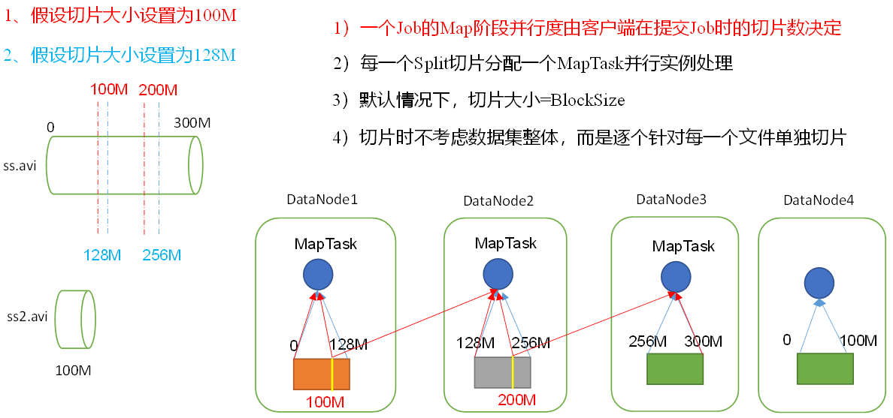
其中4）是说，假如在ss.avi与ss2.avi一块到来时，每个文件单独切片。不会合在一块切，即使刚好能凑成一个整数块的大小。
Job提交流程源码和切片源码详解（主要源码）
1．Job提交流程源码详解，如下：
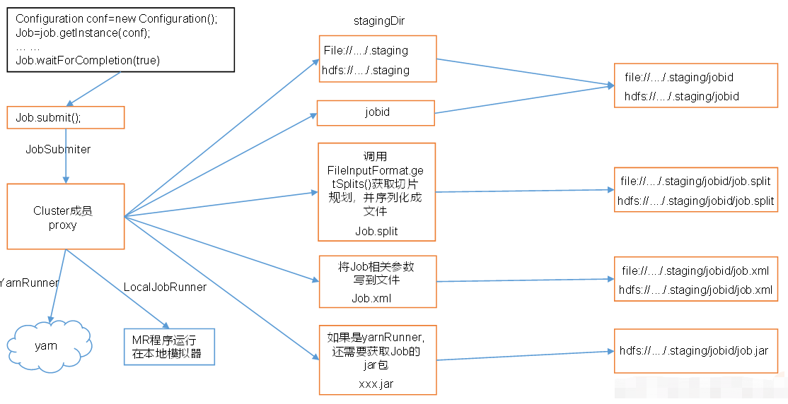
waitForCompletion()
// 其下面还有一些打印信息的代码
submit();
/*在这中间有一个是判断状态的，一个是设置新的api的*/
// 1建立连接
connect();
// 1）创建提交Job的代理
new Cluster(getConfiguration());
// （1）判断是本地yarn还是远程（主要工作）
initialize(jobTrackAddr, conf);
// 2 提交job
submitter.submitJobInternal(Job.this, cluster)
// 1）创建给集群提交数据的Stag路径（每个任务在本地都会创建一个，提交之后就会删除）
Path jobStagingArea = JobSubmissionFiles.getStagingDir(cluster, conf);
// 2）获取jobid ，并创建Job路径
JobID jobId = submitClient.getNewJobID();
// 3）拷贝jar包到集群（集群会走这块）
copyAndConfigureFiles(job, submitJobDir);
rUploader.uploadFiles(job, jobSubmitDir);
// 4）计算切片，生成切片规划文件
writeSplits(job, submitJobDir);
maps = writeNewSplits(job, jobSubmitDir);
input.getSplits(job);
// 5）向Stag路径写XML配置文件
writeConf(conf, submitJobFile);
conf.writeXml(out);
// 6）提交Job,返回提交状态
status = submitClient.submitJob(jobId, submitJobDir.toString(), job.getCredentials());2．FileInputFormat切片源码解析(input.getSplits(job))
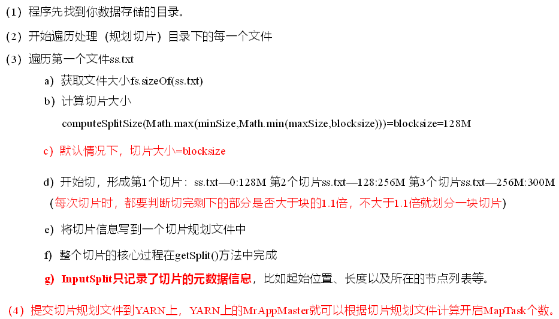
FileInputFormat切片机制
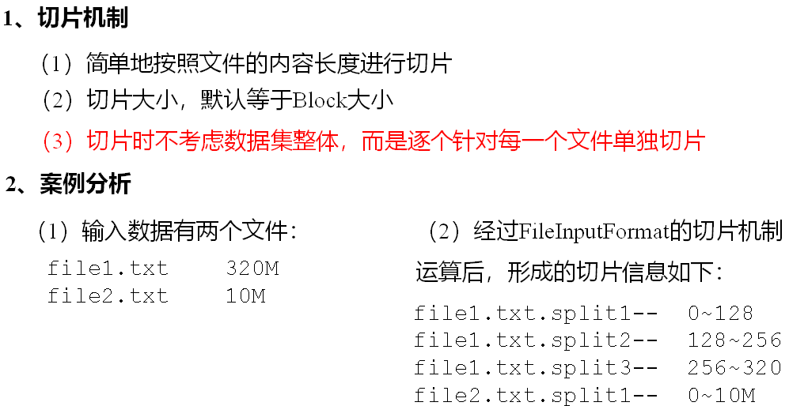
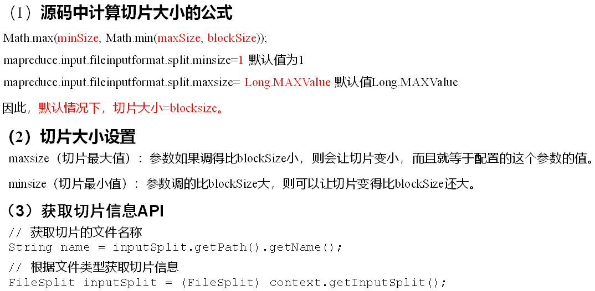
从代码中可以看到，本地运行的话，块的大小是32m。
文件大小/切片大小，如果大于1.1，则要进行切片，否则不用切。
在集群上，若一个文件129m，则要存在两个块上，但是只切一片
CombineTextInputFormat切片机制
框架默认的TextInputFormat切片机制是对任务按文件规划切片，不管文件多小，都会是一个单独的切片，都会交给一个MapTask，这样如果有大量小文件，就会产生大量的MapTask，处理效率极其低下。
1、应用场景：
CombineTextInputFormat用于小文件过多的场景，它可以将多个小文件从逻辑上规划到一个切片中，这样，多个小文件就可以交给一个MapTask处理。
2、虚拟存储切片最大值设置
CombineTextInputFormat.setMaxInputSplitSize(job, 4194304);// 4m
注意：虚拟存储切片最大值设置最好根据实际的小文件大小情况来设置具体的值。
3、切片机制
生成切片过程包括：虚拟存储过程和切片过程二部分。
（1）虚拟存储过程：
将输入目录下所有文件大小，依次和设置的setMaxInputSplitSize值比较，如果不大于设置的最大值，逻辑上划分一个块。如果输入文件大于设置的最大值且大于两倍，那么以最大值切割一块；当剩余数据大小超过设置的最大值且不大于最大值2倍，此时将文件均分成2个虚拟存储块（防止出现太小切片）。
例如setMaxInputSplitSize值为4M，输入文件大小为8.02M，则先逻辑上分成一个4M。剩余的大小为4.02M，如果按照4M逻辑划分，就会出现0.02M的小的虚拟存储文件，所以将剩余的4.02M文件切分成（2.01M和2.01M）两个文件。
（2）切片过程：
（a）判断虚拟存储的文件大小是否大于setMaxInputSplitSize值，大于等于则单独形成一个切片。
（b）如果不大于则跟下一个虚拟存储文件进行合并，共同形成一个切片。
（c）测试举例：有4个小文件大小分别为1.7M、5.1M、3.4M以及6.8M这四个小文件，则虚拟存储之后形成6个文件块，大小分别为：
1.7M，（2.55M、2.55M），3.4M以及（3.4M、3.4M）
最终会形成3个切片，大小分别为：
（1.7+2.55）M，（2.55+3.4）M，（3.4+3.4）M
若有一个10m的文件来切分的话，则会切成4+3+3，三个文件
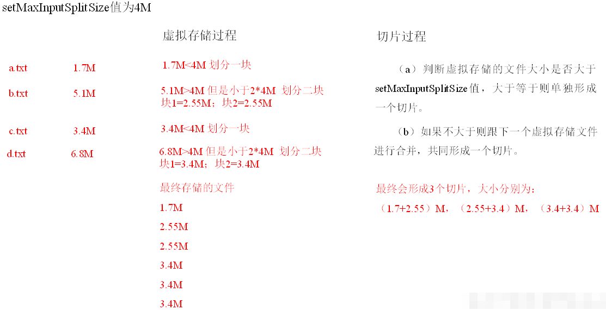
CombineTextInputFormat案例实操
1．需求
将输入的大量小文件合并成一个切片统一处理。
（1）输入数据
准备4个小文件
（2）期望
期望一个切片处理4个文件
2．实现过程
（1）不做任何处理，运行1.6节的WordCount案例程序，观察切片个数为4。
number of splits : 4
（2）在WordcountDriver中增加如下代码，运行程序，并观察运行的切片个数为3。
（a）驱动类中添加代码如下：
// 如果不设置InputFormat，它默认用的是TextInputFormat.class
job.setInputFormatClass(CombineTextInputFormat.class);
//虚拟存储切片最大值设置4m
CombineTextInputFormat.setMaxInputSplitSize(job, 4194304);（b）运行如果为3个切片。
number of splits : 3
（3）在WordcountDriver中增加如下代码，运行程序，并观察运行的切片个数为1。
（a）驱动中添加代码如下：
// 如果不设置InputFormat，它默认用的是TextInputFormat.class
job.setInputFormatClass(CombineTextInputFormat.class);
//虚拟存储切片最大值设置20m
CombineTextInputFormat.setMaxInputSplitSize(job, 20971520);（b）运行如果为1个切片。
number of splits : 1
FileInputFormat实现类
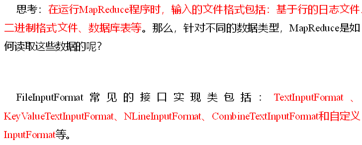
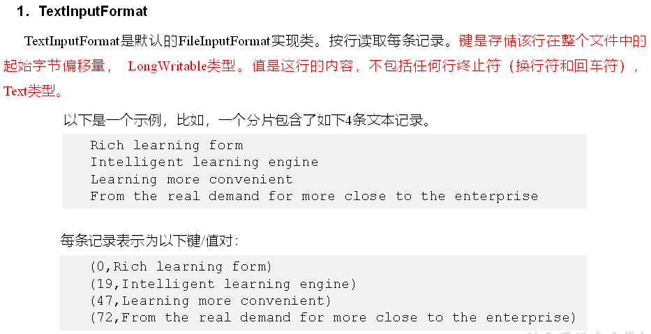
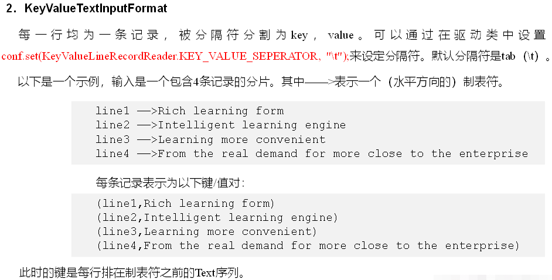
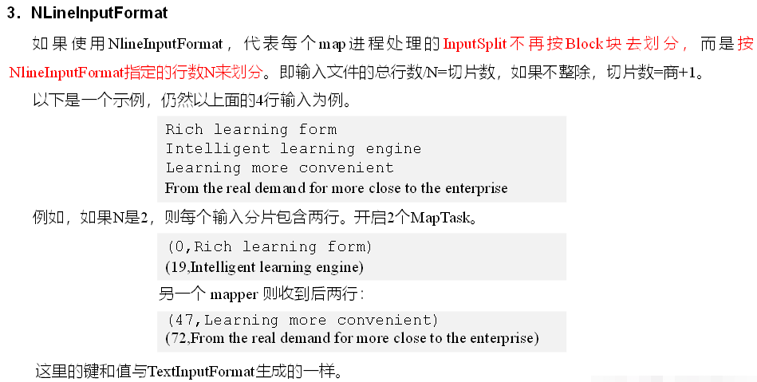
KeyValueTextInputFormat使用案例
1．需求
统计输入文件中每一行的第一个单词相同的行数。
（1）输入数据
apple ni hao
bigdata hadoop
apple hello
bigdata orange hadoop（2）期望结果数据
apple 2
bigdata 22．需求分析
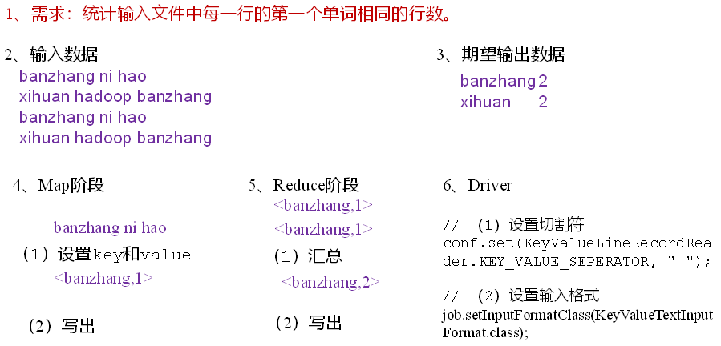
3．代码实现
（1）编写Mapper类
package com.swenchao.mr.kv;
import java.io.IOException;
import org.apache.hadoop.io.LongWritable;
import org.apache.hadoop.io.Text;
import org.apache.hadoop.mapreduce.Mapper;
public class KVTextMapper extends Mapper<Text, Text, Text, LongWritable>{
// 1 设置value
LongWritable v = new LongWritable(1);
@Override
protected void map(Text key, Text value, Context context)
throws IOException, InterruptedException {
// banzhang ni hao
// 2 写出
context.write(key, v);
}
}（2）编写Reducer类
package com.swenchao.mr.kv;
import java.io.IOException;
import org.apache.hadoop.io.LongWritable;
import org.apache.hadoop.io.Text;
import org.apache.hadoop.mapreduce.Reducer;
public class KVTextReducer extends Reducer<Text, LongWritable, Text, LongWritable>{
LongWritable v = new LongWritable();
@Override
protected void reduce(Text key, Iterable<LongWritable> values, Context context) throws IOException, InterruptedException {
long sum = 0L;
// 1 汇总统计
for (LongWritable value : values) {
sum += value.get();
}
v.set(sum);
// 2 输出
context.write(key, v);
}
}（3）编写Driver类
package com.swenchao.mr.kv;
import java.io.IOException;
import org.apache.hadoop.conf.Configuration;
import org.apache.hadoop.fs.Path;
import org.apache.hadoop.io.LongWritable;
import org.apache.hadoop.io.Text;
import org.apache.hadoop.mapreduce.Job;
import org.apache.hadoop.mapreduce.lib.input.FileInputFormat;
import org.apache.hadoop.mapreduce.lib.input.KeyValueLineRecordReader;
import org.apache.hadoop.mapreduce.lib.input.KeyValueTextInputFormat;
import org.apache.hadoop.mapreduce.lib.output.FileOutputFormat;
public class KVTextDriver {
public static void main(String[] args) throws IOException, ClassNotFoundException, InterruptedException {
Configuration conf = new Configuration();
// 设置切割符
conf.set(KeyValueLineRecordReader.KEY_VALUE_SEPERATOR, " ");
// 1 获取job对象
Job job = Job.getInstance(conf);
// 2 设置jar包位置，关联mapper和reducer
job.setJarByClass(KVTextDriver.class);
job.setMapperClass(KVTextMapper.class);
job.setReducerClass(KVTextReducer.class);
// 3 设置map输出kv类型
job.setMapOutputKeyClass(Text.class);
job.setMapOutputValueClass(LongWritable.class);
// 4 设置最终输出kv类型
job.setOutputKeyClass(Text.class);
job.setOutputValueClass(LongWritable.class);
// 5 设置输入输出数据路径
FileInputFormat.setInputPaths(job, new Path(args[0]));
// 设置输入格式
job.setInputFormatClass(KeyValueTextInputFormat.class);
// 6 设置输出数据路径
FileOutputFormat.setOutputPath(job, new Path(args[1]));
// 7 提交job
job.waitForCompletion(true);
}
}NLineInputFormat使用案例
1．需求
对每个单词进行个数统计，要求根据每个输入文件的行数来规定输出多少个切片。此案例要求每三行放入一个切片中。
（1）输入数据
apple ni hao
orange hadoop apple
apple ni hao
orange hadoop apple
apple ni hao
orange hadoop apple
apple ni hao
orange hadoop apple
apple ni hao
orange hadoop apple apple ni hao
orange hadoop apple（2）期望输出数据
Number of splits:4
2．需求分析
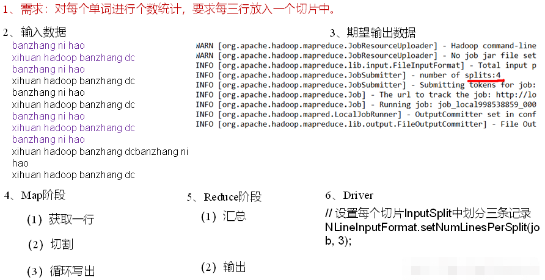
3．代码实现
（1）编写Mapper类
package com.swenchao.mr.nline;
import java.io.IOException;
import org.apache.hadoop.io.LongWritable;
import org.apache.hadoop.io.Text;
import org.apache.hadoop.mapreduce.Mapper;
public class NLineMapper extends Mapper<LongWritable, Text, Text, LongWritable>{
private Text k = new Text();
private LongWritable v = new LongWritable(1);
@Override
protected void map(LongWritable key, Text value, Context context) throws IOException, InterruptedException {
// 获取一行
String line = value.toString();
// 切割
String[] words = line.split(" ");
// 遍历
for (String word : words){
k.set(word);
context.write(k, v);
}
}
}（2）编写Reducer类
package com.swenchao.mr.nline;
import java.io.IOException;
import org.apache.hadoop.io.LongWritable;
import org.apache.hadoop.io.Text;
import org.apache.hadoop.mapreduce.Reducer;
public class NLineReducer extends Reducer<Text, LongWritable, Text, LongWritable>{
LongWritable v = new LongWritable();
@Override
protected void reduce(Text key, Iterable<IntWritable> values, Context context) throws IOException, InterruptedException {
int sum = 0;
// 1 求和
for (LongWritable value : values) {
sum += value.get();
}
v.set(sum);
// 2 输出
context.write(key, v);
}
}（3）编写Driver类
package com.swenchao.mr.nline;
import java.io.IOException;
import java.net.URISyntaxException;
import org.apache.hadoop.conf.Configuration;
import org.apache.hadoop.fs.Path;
import org.apache.hadoop.io.LongWritable;
import org.apache.hadoop.io.Text;
import org.apache.hadoop.mapreduce.Job;
import org.apache.hadoop.mapreduce.lib.input.FileInputFormat;
import org.apache.hadoop.mapreduce.lib.input.NLineInputFormat;
import org.apache.hadoop.mapreduce.lib.output.FileOutputFormat;
public class NLineDriver {
public static void main(String[] args) throws IOException, URISyntaxException, ClassNotFoundException, InterruptedException {
// 输入输出路径
args = new String[]{"D:/scwri/Desktop/input/", "D:/scwri/Desktop/output"};
// 1 获取job对象
Configuration configuration = new Configuration();
Job job = Job.getInstance(configuration);
// 7设置每个切片InputSplit中划分三条记录（三行一片）
NLineInputFormat.setNumLinesPerSplit(job, 3);
// 8使用NLineInputFormat处理记录数
job.setInputFormatClass(NLineInputFormat.class);
// 2设置jar包位置，关联mapper和reducer
job.setJarByClass(NLineDriver.class);
job.setMapperClass(NLineMapper.class);
job.setReducerClass(NLineReducer.class);
// 3设置map输出kv类型
job.setMapOutputKeyClass(Text.class);
job.setMapOutputValueClass(LongWritable.class);
// 4设置最终输出kv类型
job.setOutputKeyClass(Text.class);
job.setOutputValueClass(LongWritable.class);
// 5设置输入输出数据路径
FileInputFormat.setInputPaths(job, new Path(args[0]));
FileOutputFormat.setOutputPath(job, new Path(args[1]));
// 6提交job
boolean result = job.waitForCompletion(true);
System.exit(result ? 0:1);
}
}自定义InputFormat
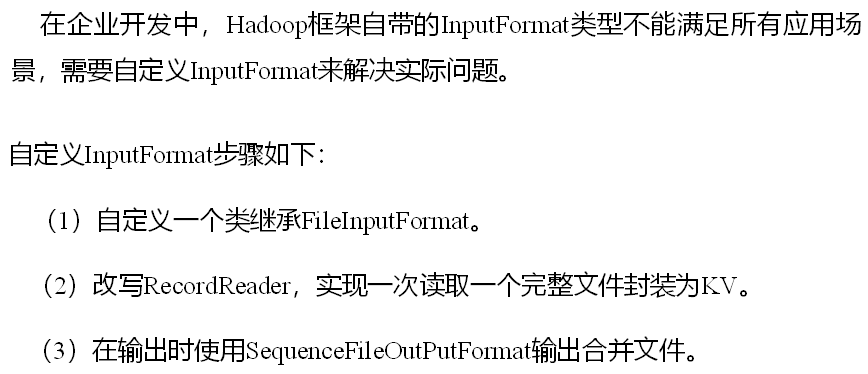
自定义InputFormat案例使用
无论HDFS还是MapReduce，在处理小文件时效率都非常低，但又难免面临处理大量小文件的场景，此时，就需要有相应解决方案。可以自定义InputFormat实现小文件的合并。
1．需求
将多个小文件合并成一个SequenceFile文件（SequenceFile文件是Hadoop用来存储二进制形式的key-value对的文件格式），SequenceFile里面存储着多个文件，存储的形式为文件路径+名称为key，文件内容为value。
输入数据
文件1
apple orange banana
pear pineapple grape文件2
Blackberry Blueberry Cherry
Crabapple Cranberry Cumquat
Blackberry Blueberry Cherry
Crabapple Cranberry Cumquat文件3
zhangsan wangwu zhaoliu
lisi qianqi sunba2．需求分析
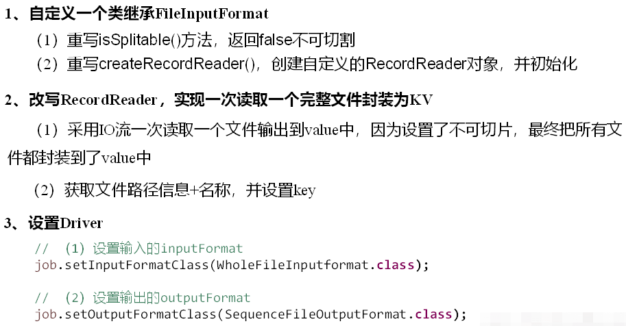
3．程序实现
（1）自定义InputFromat
package com.swenchao.mr.selfInputFormat;
import org.apache.hadoop.io.BytesWritable;
import org.apache.hadoop.io.Text;
import org.apache.hadoop.mapreduce.InputSplit;
import org.apache.hadoop.mapreduce.RecordReader;
import org.apache.hadoop.mapreduce.TaskAttemptContext;
import org.apache.hadoop.mapreduce.lib.input.FileInputFormat;
import java.io.IOException;
/**
* @Author: Swenchao
* @Date: 2020/9/8 下午 03:13
* @Func: 自定义Inputformat类
*/
public class SelfInput extends FileInputFormat<Text, BytesWritable> {
@Override
public RecordReader<Text, BytesWritable> createRecordReader(InputSplit inputSplit, TaskAttemptContext taskAttemptContext) throws IOException, InterruptedException {
SelfInputRecordReder recordReder = new SelfInputRecordReder();
recordReder.initialize(inputSplit, taskAttemptContext);
return recordReder;
}
}（2）自定义SelfInputRecordReder类
package com.swenchao.mr.selfInputFormat;
import org.apache.hadoop.conf.Configuration;
import org.apache.hadoop.fs.FSDataInputStream;
import org.apache.hadoop.fs.FileSystem;
import org.apache.hadoop.fs.Path;
import org.apache.hadoop.io.BytesWritable;
import org.apache.hadoop.io.IOUtils;
import org.apache.hadoop.io.Text;
import org.apache.hadoop.mapreduce.lib.input.FileSplit;
import org.apache.hadoop.mapreduce.InputSplit;
import org.apache.hadoop.mapreduce.RecordReader;
import org.apache.hadoop.mapreduce.TaskAttemptContext;
import java.io.IOException;
/**
* @Author: Swenchao
* @Date: 2020/9/8 下午 03:19
* @Func:
*/
public class SelfInputRecordReder extends RecordReader<Text, BytesWritable> {
FileSplit split;
Configuration conf;
Text k = new Text();
BytesWritable v = new BytesWritable();
boolean isProgress = true;
@Override
public void initialize(InputSplit inputSplit, TaskAttemptContext taskAttemptContext) throws IOException, InterruptedException {
// 初始化
this.split = (FileSplit)inputSplit;
conf = taskAttemptContext.getConfiguration();
}
@Override
public boolean nextKeyValue() throws IOException, InterruptedException {
// 业务逻辑处理(封装最终结果)
if (isProgress){
byte[] buf = new byte[(int)split.getLength()];
FileSystem fs = null;
FSDataInputStream fis = null;
// 获取fs对象（每个切片都能拿到相应的路径）
Path path= split.getPath();
fs = path.getFileSystem(conf);
// 获取输入流
fis = fs.open(path);
// 拷贝(将fis信息读取到buf中；0是从哪开始读；buf.length读取长度)
IOUtils.readFully(fis, buf, 0, buf.length);
// 写入v
v.set(buf, 0, buf.length);
// 封装k
k.set(path.toString());
// 关闭集群
IOUtils.closeStream(fis);
isProgress = false;
return true;
}
return false;
}
@Override
public Text getCurrentKey() throws IOException, InterruptedException {
return k;
}
@Override
public BytesWritable getCurrentValue() throws IOException, InterruptedException {
return v;
}
/**
* 获取正在处理进程
* @return
* @throws IOException
* @throws InterruptedException
*/
@Override
public float getProgress() throws IOException, InterruptedException {
return 0;
}
@Override
public void close() throws IOException {
}
}（3）编写SelfInputMapper类处理流程
package com.swenchao.mr.selfInputFormat;
import com.sun.crypto.provider.HmacPKCS12PBESHA1;
import org.apache.hadoop.io.BytesWritable;
import org.apache.hadoop.io.Text;
import org.apache.hadoop.mapreduce.Mapper;
import java.io.IOException;
/**
* @Author: Swenchao
* @Date: 2020/9/8 下午 08:20
* @Func: mapper类
*/
public class SelfInputMapper extends Mapper<Text, BytesWritable, Text, BytesWritable> {
@Override
protected void map(Text key, BytesWritable value, Context context) throws IOException, InterruptedException {
context.write(key, value);
}
}（4）编写SelfInputReducer类处理流程
package com.swenchao.mr.selfInputFormat;
import org.apache.hadoop.io.BytesWritable;
import org.apache.hadoop.io.Text;
import org.apache.hadoop.mapreduce.Reducer;
import java.io.IOException;
/**
* @Author: Swenchao
* @Date: 2020/9/8 下午 08:20
* @Func: reducer类
*/
public class SelfInputReducer extends Reducer<Text, BytesWritable, Text, BytesWritable> {
@Override
protected void reduce(Text key, Iterable<BytesWritable> values, Context context) throws IOException, InterruptedException {
for (BytesWritable value : values){
context.write(key, value);
}
}
}
（5）编写SelfInputDriver类处理流程
package com.swenchao.mr.selfInputFormat;
import org.apache.hadoop.conf.Configuration;
import org.apache.hadoop.fs.Path;
import org.apache.hadoop.io.BytesWritable;
import org.apache.hadoop.io.Text;
import org.apache.hadoop.mapreduce.Job;
import org.apache.hadoop.mapreduce.lib.input.FileInputFormat;
import org.apache.hadoop.mapreduce.lib.output.FileOutputFormat;
import org.apache.hadoop.mapreduce.lib.output.SequenceFileOutputFormat;
import java.io.IOException;
/**
* @Author: Swenchao
* @Date: 2020/9/8 下午 08:20
* @Func:
*/
public class SelfInputDriver {
public static void main(String[] args) throws IOException, ClassNotFoundException, InterruptedException {
args = new String[]{"D:/scwri/Desktop/input/", "D:/scwri/Desktop/output"};
Configuration conf = new Configuration();
Job job = Job.getInstance(conf);
job.setJarByClass(SelfInputDriver.class);
job.setMapperClass(SelfInputMapper.class);
job.setReducerClass(SelfInputReducer.class);
job.setInputFormatClass(SelfInput.class);
job.setOutputFormatClass(SequenceFileOutputFormat.class);
job.setMapOutputKeyClass(Text.class);
job.setMapOutputValueClass(BytesWritable.class);
job.setOutputKeyClass(Text.class);
job.setOutputValueClass(BytesWritable.class);
FileInputFormat.setInputPaths(job, new Path(args[0]));
FileOutputFormat.setOutputPath(job, new Path(args[1]));
boolean res = job.waitForCompletion(true);
System.exit(res ? 0:1);
}
}FileInputFormat常见接口实现总结
| FileInputFormat常见接口 | 切片方式 | 默认key | 默认value |
|---|---|---|---|
| TextInputFormat | 按块（block）的大小来切 | LongWritable（偏移量） | Text（一行的内容，按行读取） |
| KeyValueTextInputFormat | 按块（block）的大小来切 | 切完后的第一列 | 切完后的剩余列 |
| NLineTextInputFormat | 按行来切 | LongWritable（偏移量） | Text（内容） |
| CombineTextInputFormat | 跟设置的最大值有关（大于最大值，小于两倍的最大值） | LongWritable（偏移量） | Text（一行的内容，按行读取） |
| 自定义InputFormat | 按块（block）的大小来切 | 跟我们自定义有关 | 跟我们自定义有关 |
4）在溢出过程及合并的过程中，都要调用Partitioner进行分区和针对key进行排序
5）ReduceTask根据自己的分区号，去各个MapTask机器上取相应的结果分区数据
6）ReduceTask会取到同一个分区的来自不同MapTask的结果文件，ReduceTask会将这些文件再进行合并（归并排序）
7）合并成大文件后，Shuffle的过程也就结束了，后面进入ReduceTask的逻辑运算过程（从文件中取出一个一个的键值对Group，调用用户自定义的reduce()方法）
3．注意
Shuffle中的缓冲区大小会影响到MapReduce程序的执行效率，原则上说，缓冲区越大，磁盘io的次数越少，执行速度就越快。
缓冲区的大小可以通过参数调整，参数：io.sort.mb默认100M。
Shuffle机制
Shuffle机制
Map方法之后，Reduce方法之前的数据处理过程称之为Shuffle，如图
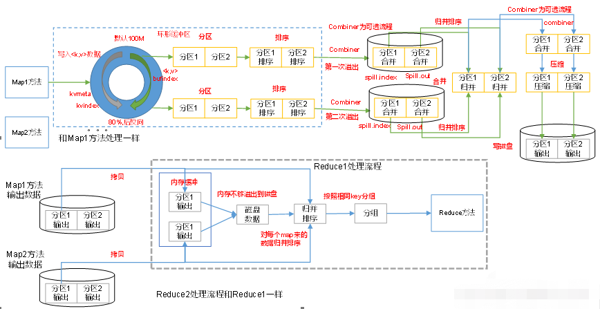
Partition分区
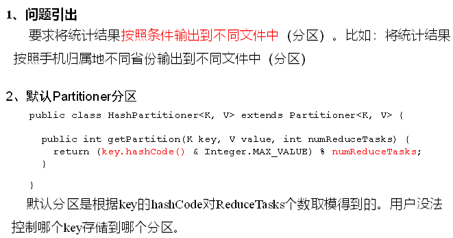
(key.hashCode() & Integer.MAX_VALUE) % numReduceTasks
(1) 默认分区是hashPartition
(2) 其中numReduceTasks默认是1。
(3) key.hashCode() & Integer.MAX_VALUE 就是规定key.hashCode() <= x <= Integer.MAX_VALUE 这么一个范围（因为 Integer.MAX_VALUE 是11111…. 那么它跟谁进行与操作都是最大是Integer.MAX_VALUE，所以规定了一个最大值）
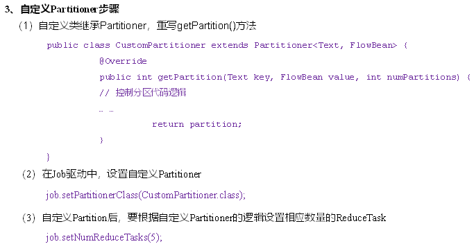
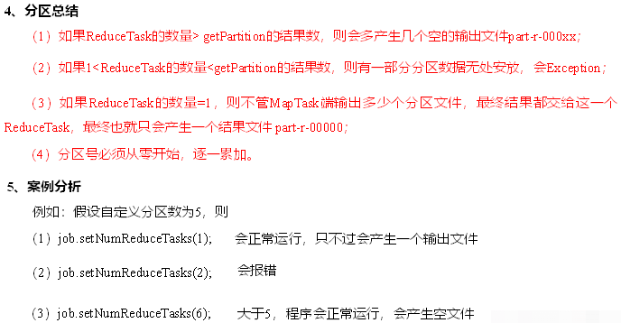
Partition分区案例
1．需求
将统计结果按照手机归属地不同省份输出到不同文件中（分区）
（1）输入数据
1 13736230513 192.196.100.1 www.baidu.com 2481 24681 200
2 13846544121 192.196.100.2 264 0 200
3 13956435636 192.196.100.3 132 1512 200
4 13966251146 192.168.100.1 240 0 404
5 18271575951 192.168.100.2 www.bilibili.com 1527 2106 200
6 84188413 192.168.100.3 www.baidu.com 4116 1432 200
7 13590439668 192.168.100.4 1116 954 200
8 15910133277 192.168.100.5 www.hao123.com 3156 2936 200
9 13729199489 192.168.100.6 240 0 200
10 13630577991 192.168.100.7 www.shouhu.com 6960 690 200
11 15043685818 192.168.100.8 www.baidu.com 3659 3538 200
12 15959002129 192.168.100.9 www.baidu.com 1938 180 500
13 13560439638 192.168.100.10 918 4938 200
14 13470253144 192.168.100.11 180 180 200
15 13682846555 192.168.100.12 www.qq.com 1938 2910 200
16 13992314666 192.168.100.13 www.gaga.com 3008 3720 200
17 13509468723 192.168.100.14 www.sogou.com 7335 110349 404
18 18390173782 192.168.100.15 www.sogou.com 9531 2412 200
19 13975057813 192.168.100.16 www.baidu.com 11058 48243 200
20 13768778790 192.168.100.17 120 120 200
21 13568436656 192.168.100.18 www.alibaba.com 2481 24681 200
22 13568436656 192.168.100.19 1116 954 200（2）期望输出数据
手机号136、137、138、139开头都分别放到4个独立的文件中，其他开头的放到一个文件中。
2．需求分析
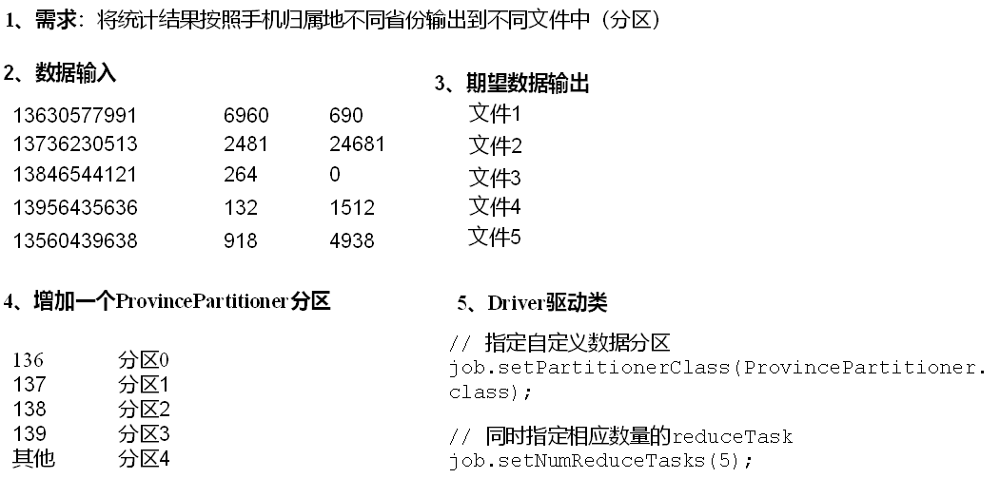
3．在第二章序列化案例（求电话流量）的基础上，增加一个分区类
package com.swenchao.mr.flowsum;
import org.apache.hadoop.io.Text;
import org.apache.hadoop.mapreduce.Partitioner;
/**
* @Author: Swenchao
* @Date: 2020/9/9 下午 03:54
* @Func: 自定义分区类
*/
public class ProvincePartitioner extends Partitioner<Text, FlowBean> {
@Override
public int getPartition(Text text, FlowBean flowBean, int i) {
// k是手机号 v是流量信息
// 获取手机号前三位（截取左闭右开）
String prePhoneNum = text.toString().substring(0, 3);
// 根据前三位进行分区
int partition = 4;
if ("136".equals(prePhoneNum)){
partition = 0;
} else if ("137".equals(prePhoneNum)){
partition = 1;
} else if ("138".equals(prePhoneNum)){
partition = 2;
} else if ("139".equals(prePhoneNum)){
partition = 3;
}
return partition;
}
}
4．在驱动函数中增加自定义数据分区设置和ReduceTask设置
package com.swenchao.mr.flowsum;
import org.apache.hadoop.conf.Configuration;
import org.apache.hadoop.fs.Path;
import org.apache.hadoop.io.Text;
import org.apache.hadoop.mapreduce.Job;
import org.apache.hadoop.mapreduce.lib.input.FileInputFormat;
import org.apache.hadoop.mapreduce.lib.input.KeyValueLineRecordReader;
import org.apache.hadoop.mapreduce.lib.input.KeyValueTextInputFormat;
import org.apache.hadoop.mapreduce.lib.output.FileOutputFormat;
import java.io.IOException;
/**
* @Author: Swenchao
* @Date: 2020/9/7 11:45
* @Func: driver类
*/
public class FlowSumDriver {
public static void main(String[] args) throws IOException, ClassNotFoundException, InterruptedException {
args = new String[]{"D:/scwri/Desktop/input_phone/", "D:/scwri/Desktop/output1"};
Configuration conf = new Configuration();
// 获取job对象
Job job = Job.getInstance(conf);
// 设置jar路径
job.setJarByClass(FlowSumDriver.class);
// 关联mapper和reducer
job.setMapperClass(FlowCountMapper.class);
job.setReducerClass(FlowCountReducer.class);
// 设置mapper输出的kv类型
job.setMapOutputKeyClass(Text.class);
job.setMapOutputValueClass(FlowBean.class);
// 设置最终输出的kv类型
job.setOutputKeyClass(Text.class);
job.setOutputValueClass(FlowBean.class);
// 设置分区和分区数
job.setPartitionerClass(ProvincePartitioner.class);
job.setNumReduceTasks(5);
// 设置输入输出路径
FileInputFormat.setInputPaths(job, new Path(args[0]));
FileOutputFormat.setOutputPath(job, new Path(args[1]));
// 提交job
boolean result = job.waitForCompletion(true);
System.exit(result ? 0:1);
}
}注：
// 设置分区和分区数
job.setPartitionerClass(ProvincePartitioner.class);
job.setNumReduceTasks(5);若定义的分区类是5，在驱动中设置的分区数如果是1或者是大于5的数都不会报错，但是其他数就会报错。
(1) 若设置分区数为1，则最终会生成1个文件并且所有数据都在1个文件里
(2) 若设置分区数为6，则最终会生成6个文件并且所有数据都在前5个文件里
WritableComparable排序
- 排序概述

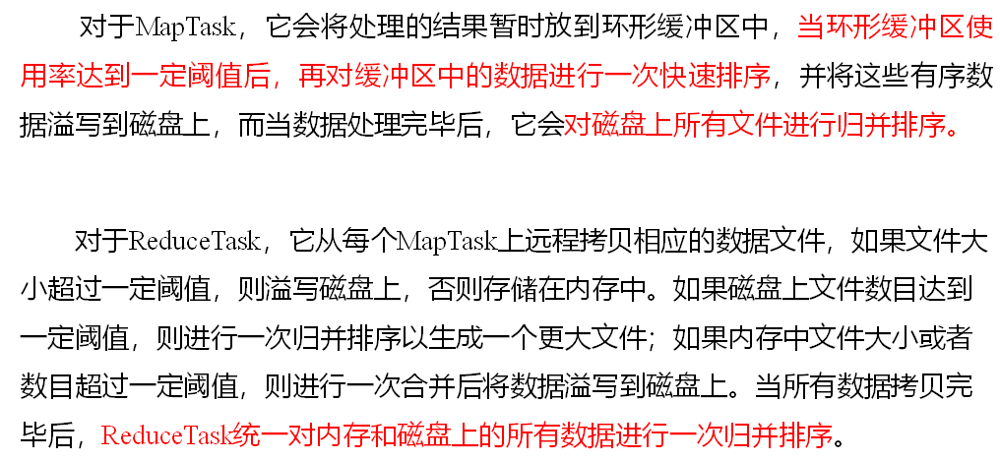
- 排序的分类
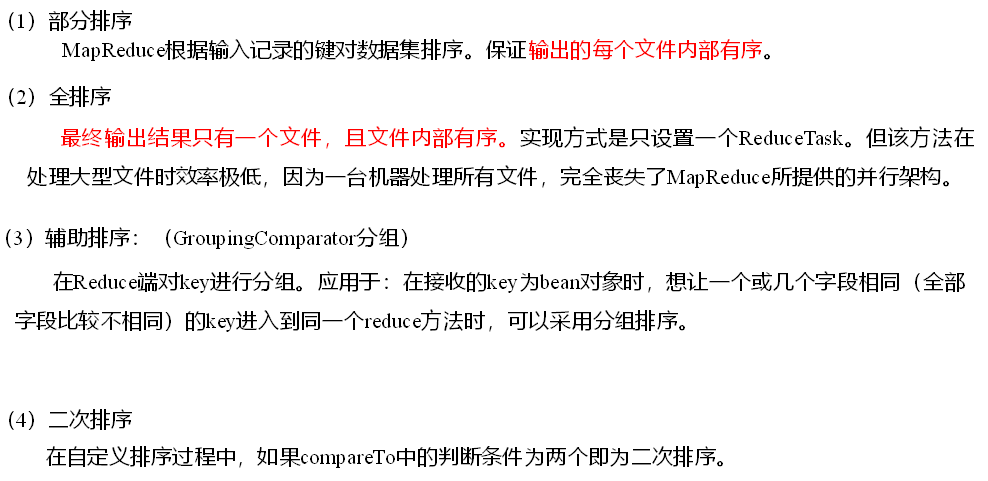
- 自定义排序WritableComparable
（1）原理分析
bean对象做为key传输，需要实现WritableComparable接口重写compareTo方法，就可以实现排序。
@Override
public int compareTo(FlowBean o) {
int result;
// 按照总流量大小，倒序排列
if (sumFlow > bean.getSumFlow()) {
result = -1;
}else if (sumFlow < bean.getSumFlow()) {
result = 1;
}else {
result = 0;
}
return result;
}WritableComparable排序案例实操（全排序）
1．需求
根据之前手机流量求和案例，对总流量进行排序。
（1）输入数据
13470253144 180 180 360
13509468723 7335 110349 117684
13560439638 918 4938 5856
13568436656 3597 25635 29232
13590439668 1116 954 2070
13630577991 6960 690 7650
13682846555 1938 2910 4848
13729199489 240 0 240
13736230513 2481 24681 27162
13768778790 120 120 240
13846544121 264 0 264
13956435636 132 1512 1644
13966251146 240 0 240
13975057813 11058 48243 59301
13992314666 3008 3720 6728
15043685818 3659 3538 7197
15910133277 3156 2936 6092
15959002129 1938 180 2118
18271575951 1527 2106 3633
18390173782 9531 2412 11943
84188413 4116 1432 5548（2）期望输出数据
13509468723 7335 110349 117684
13736230513 2481 24681 27162
13956435636 132 1512 1644
13846544121 264 0 264
...2．需求分析
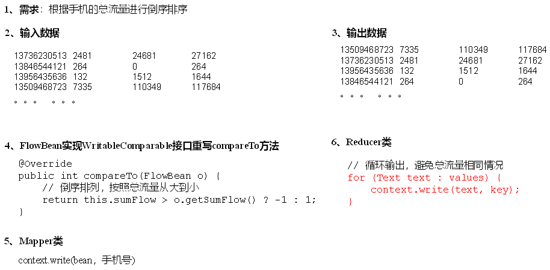
3．代码实现
（1）FlowSortBean对象在在之前的基础上增加了比较功能
package com.swenchao.mr.sort;
import org.apache.hadoop.io.WritableComparable;
import java.io.DataInput;
import java.io.DataOutput;
import java.io.IOException;
/**
* @Author: Swenchao
* @Date: 2020/9/9 下午 07:42
* @Func: 自己定义的FlowBean对象
*/
public class FlowSortBean implements WritableComparable<FlowSortBean> {
/**上行流量*/
private long upFlow;
/**下行流量*/
private long downFlow;
/**总流量*/
private long sumFlow;
public FlowSortBean() {
}
public FlowSortBean(long upFlow, long downFlow) {
this.upFlow = upFlow;
this.downFlow = downFlow;
this.sumFlow = upFlow + downFlow;
}
public void set(long upFlow, long downFlow) {
this.upFlow = upFlow;
this.downFlow = downFlow;
this.sumFlow = upFlow + downFlow;
}
/**
* 排序比较
* @param bean
* @return res
*/
@Override
public int compareTo(FlowSortBean bean) {
int res;
// 比较逻辑
if (sumFlow < bean.getSumFlow()){
res = 1;
} else if (sumFlow > bean.getSumFlow()){
res = -1;
} else {
res = 0;
}
return res;
}
/**
* 序列化
* @param dataOutput
* @throws IOException
*/
@Override
public void write(DataOutput dataOutput) throws IOException {
dataOutput.writeLong(upFlow);
dataOutput.writeLong(downFlow);
dataOutput.writeLong(sumFlow);
}
/**
* 反序列化
* @param dataInput
* @throws IOException
*/
@Override
public void readFields(DataInput dataInput) throws IOException {
upFlow = dataInput.readLong();
downFlow = dataInput.readLong();
sumFlow = dataInput.readLong();
}
public long getUpFlow() {
return upFlow;
}
public void setUpFlow(long upFlow) {
this.upFlow = upFlow;
}
public long getDownFlow() {
return downFlow;
}
public void setDownFlow(long downFlow) {
this.downFlow = downFlow;
}
public long getSumFlow() {
return sumFlow;
}
public void setSumFlow(long sumFlow) {
this.sumFlow = sumFlow;
}
@Override
public String toString() {
return upFlow + "\t" + downFlow + "\t" + sumFlow;
}
}（2）编写Mapper类
package com.swenchao.mr.sort;
import java.io.IOException;
import org.apache.hadoop.io.LongWritable;
import org.apache.hadoop.io.Text;
import org.apache.hadoop.mapreduce.Mapper;
/**
* @Author: Swenchao
* @Date: 2020/9/9 下午 08:13
* @Func: mapper类
*/
public class FlowCountSortMapper extends Mapper<LongWritable, Text, FlowSortBean, Text>{
FlowSortBean bean = new FlowSortBean();
Text v = new Text();
@Override
protected void map(LongWritable key, Text value, Context context) throws IOException, InterruptedException {
// 1 获取一行
String line = value.toString();
// 2 截取
String[] fields = line.split("\t");
// 3 封装对象
String phoneNbr = fields[0];
long upFlow = Long.parseLong(fields[1]);
long downFlow = Long.parseLong(fields[2]);
long sumFlow = Long.parseLong(fields[3]);
bean.set(upFlow, downFlow);
v.set(phoneNbr);
// 4 输出
context.write(bean, v);
}
}（3）编写Reducer类
package com.swenchao.mr.sort;
import org.apache.hadoop.io.Text;
import org.apache.hadoop.mapreduce.Reducer;
import java.io.IOException;
/**
* @Author: Swenchao
* @Date: 2020/9/9 下午 08:13
* @Func: reducer类
*/
public class FlowCountSortReducer extends Reducer<FlowSortBean, Text, Text, FlowSortBean> {
@Override
protected void reduce(FlowSortBean key, Iterable<Text> values, Context context) throws IOException, InterruptedException {
for (Text value : values){
context.write(value, key);
}
}
}
（4）编写Driver类
package com.swenchao.mr.sort;
import org.apache.hadoop.conf.Configuration;
import org.apache.hadoop.fs.Path;
import org.apache.hadoop.io.Text;
import org.apache.hadoop.mapreduce.Job;
import org.apache.hadoop.mapreduce.lib.input.FileInputFormat;
import org.apache.hadoop.mapreduce.lib.output.FileOutputFormat;
import java.io.IOException;
/**
* @Author: Swenchao
* @Date: 2020/9/9 下午 08:13
* @Func:
*/
public class FlowCountSortDriver {
public static void main(String[] args) throws IOException, ClassNotFoundException, InterruptedException {
args = new String[]{"D:/scwri/Desktop/input_phone/phone_sum.txt", "D:/scwri/Desktop/output1"};
Configuration conf = new Configuration();
// 获取job对象
Job job = Job.getInstance(conf);
// 设置jar路径
job.setJarByClass(FlowCountSortDriver.class);
// 关联mapper和reducer
job.setMapperClass(FlowCountSortMapper.class);
job.setReducerClass(FlowCountSortReducer.class);
// 设置mapper输出的kv类型
job.setMapOutputValueClass(Text.class);
job.setMapOutputKeyClass(FlowSortBean.class);
// 设置最终输出的kv类型
job.setOutputKeyClass(FlowSortBean.class);
job.setOutputValueClass(Text.class);
// 设置输入输出路径
FileInputFormat.setInputPaths(job, new Path(args[0]));
FileOutputFormat.setOutputPath(job, new Path(args[1]));
// 提交job
boolean result = job.waitForCompletion(true);
System.exit(result ? 0:1);
}
}WritableComparable排序案例实操（区内排序）
1．需求
要求之前整理的每个前缀手机号输出的文件中按照总流量内部排序。
2．需求分析
基于上一个需求，增加自定义分区类，分区按照省份手机号设置。
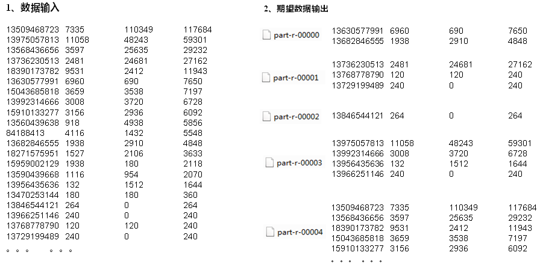
3．案例实操
（1）增加自定义分区类
package com.swenchao.mr.sort;
import org.apache.hadoop.io.Text;
import org.apache.hadoop.mapreduce.Partitioner;
/**
* @Author: Swenchao
* @Date: 2020/9/9 下午 09:37
* @Func:
*/
public class ProvincePartitioner extends Partitioner<FlowSortBean, Text> {
@Override
public int getPartition(FlowSortBean flowSortBean, Text text, int i) {
// 按照手机号前三位分区
// 获取前三位
String prePhoneNum = text.toString().substring(0, 3);
// 根据前三位进行分区
int partition = 4;
if (prePhoneNum.equals("136")){
partition = 0;
} else if (prePhoneNum.equals("137")){
partition = 1;
} if (prePhoneNum.equals("138")){
partition = 2;
} if (prePhoneNum.equals("139")){
partition = 3;
}
return partition;
}
}（2）在驱动类中添加分区类
// 加载自定义分区类
job.setPartitionerClass(ProvincePartitioner.class);
// 设置Reducetask个数
job.setNumReduceTasks(5);Combiner合并
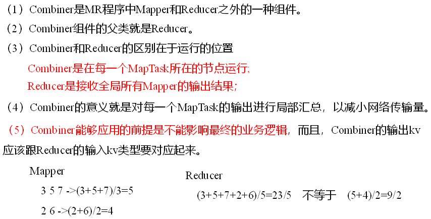
combiner不适用于求平均一类操作，只适用于汇总一类的工作。
（6）自定义Combiner实现步骤
（a）自定义一个Combiner继承Reducer，重写Reduce方法
public class WordcountCombiner extends Reducer<Text, IntWritable, Text,IntWritable>{
@Override
protected void reduce(Text key, Iterable<IntWritable> values,Context context) throws IOException, InterruptedException {
// 1 汇总操作
int count = 0;
for(IntWritable v :values){
count += v.get();
}
// 2 写出
context.write(key, new IntWritable(count));
}
}（b）在Job驱动类中设置：
job.setCombinerClass(WordcountCombiner.class);Combiner合并案例实操
- 需求
统计过程中对每一个MapTask的输出进行局部汇总，以减小网络传输量即采用Combiner功能。
（1）数据输入
apple spark hi
bigdata hadoop
apple hello hi
bigdata orange hadoop（2）期望输出数据
期望：Combine输入数据多，输出时经过合并，输出数据降低。
- 需求分析
对每一个MapTask的输出进行局部汇总
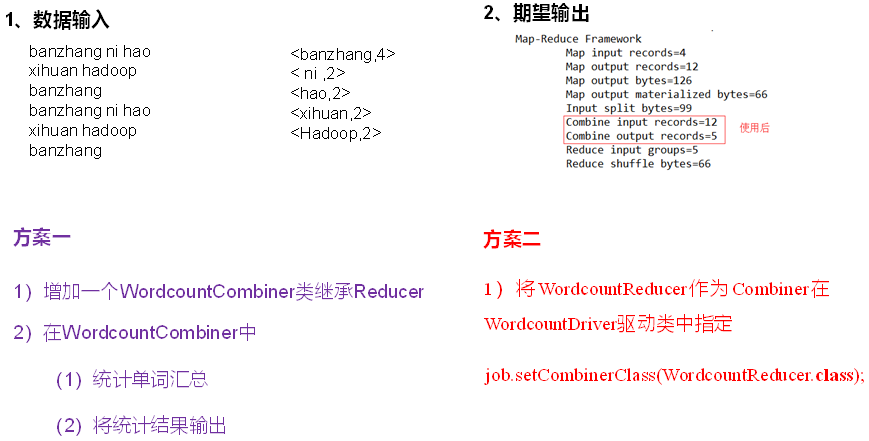
- 方案一
1）增加一个WordcountCombiner类继承Reducer
package com.swenchao.mr.wordcount;
import org.apache.hadoop.io.IntWritable;
import org.apache.hadoop.io.Text;
import org.apache.hadoop.mapreduce.Reducer;
import java.io.IOException;
/**
* @Author: Swenchao
* @Date: 2020/9/10 上午 10:12
* @Func: Combiner类
*/
public class WordcountCombiner extends Reducer<Text, IntWritable, Text, IntWritable> {
IntWritable v = new IntWritable();
@Override
protected void reduce(Text key, Iterable<IntWritable> values, Context context) throws IOException, InterruptedException {
int sum = 0;
// 累加求和
for(IntWritable value : values){
sum += value.get();
}
v.set(sum);
// 写出
context.write(key, v);
}
}2）在WordcountDriver驱动类中指定Combiner
// 指定需要使用combiner，以及用哪个类作为combiner的逻辑
job.setCombinerClass(WordcountCombiner.class);4．案例实操-方案二
1）将WordcountReducer作为Combiner在WordcountDriver驱动类中进行绑定
// 指定需要使用Combiner，以及用哪个类作为Combiner的逻辑
job.setCombinerClass(WordcountReducer.class);运行程序结果对比
使用前
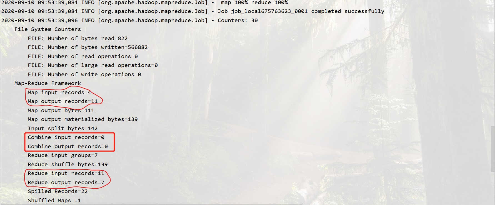
使用后
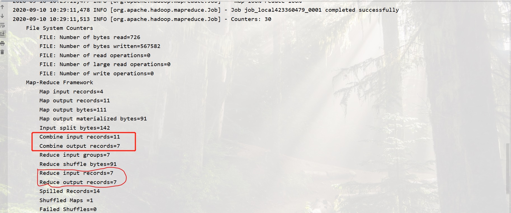
可以看出其中combiner就在mapper与reducer之间。其中使用之后，reducer的输入明显减少，这就说明已经进行了一次汇总。
GroupingComparator分组（辅助排序）
对Reduce阶段的数据根据某一个或几个字段进行分组。
分组排序步骤：
（1）自定义类继承WritableComparator
（2）重写compare()方法
@Override
public int compare(WritableComparable a, WritableComparable b) {
// 比较的业务逻辑
return result;
}（3）创建一个构造将比较对象的类传给父类
protected OrderGroupingComparator() {
super(OrderBean.class, true);
}GroupingComparator分组案例
1．需求
有如下订单数据
| 订单id | 商品id | 成交金额 |
|---|---|---|
| 0000001 | Pdt_01 | 222.8 |
| Pdt_02 | 33.8 | |
| 0000002 | Pdt_03 | 522.8 |
| Pdt_04 | 122.4 | |
| Pdt_05 | 722.4 | |
| 0000003 | Pdt_06 | 232.8 |
| Pdt_02 | 33.8 |
现在需要求出每一个订单中最贵的商品。
（1）输入数据
0000001 Pdt_01 222.8
0000002 Pdt_05 722.4
0000001 Pdt_02 33.8
0000003 Pdt_06 232.8
0000003 Pdt_02 33.8
0000002 Pdt_03 522.8
0000002 Pdt_04 122.4（2）期望输出数据
1 222.8
2 722.4
3 232.82．需求分析
（1）利用“订单id和成交金额”作为key，可以将Map阶段读取到的所有订单数据按照id升序排序，如果id相同再按照金额降序排序，发送到Reduce。
（2）在Reduce端利用groupingComparator将订单id相同的kv聚合成组，然后取第一个即是该订单中最贵商品，如图
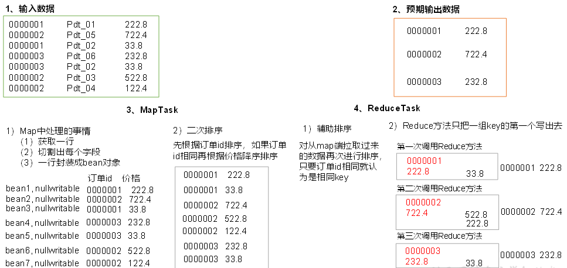
3．代码实现
（1）定义订单信息OrderBean类
package com.swenchao.mr.order;
import org.apache.hadoop.io.WritableComparable;
import java.io.DataInput;
import java.io.DataOutput;
import java.io.IOException;
/**
* @Author: Swenchao
* @Date: 2020/9/10 下午 01:47
* @Func:
*/
public class OrderBean implements WritableComparable<OrderBean> {
/**订单id*/
private int orderId;
/**价格*/
private double price;
public OrderBean() {
}
public OrderBean(int orderId, int price) {
this.orderId = orderId;
this.price = price;
}
public int getOrderId() {
return orderId;
}
public void setOrderId(int orderId) {
this.orderId = orderId;
}
public double getPrice() {
return price;
}
public void setPrice(double price) {
this.price = price;
}
@Override
public int compareTo(OrderBean bean) {
// 先按id升序排序，如果相同再降序排序
int result = 1;
if (orderId > bean.getOrderId()) {
result = 1;
} else if (orderId < bean.getOrderId()){
result = -1;
} else {
if (price > bean.getPrice()){
result = -1;
} else if (price < bean.getPrice()){
result = 1;
} else {
result = 0;
}
}
return result;
}
@Override
public void write(DataOutput dataOutput) throws IOException {
dataOutput.writeInt(orderId);
dataOutput.writeDouble(price);
}
@Override
public void readFields(DataInput dataInput) throws IOException {
orderId = dataInput.readInt();
price = dataInput.readDouble();
}
@Override
public String toString() {
return orderId + "\t" + price;
}
}（2）编写OrderMapper类
package com.swenchao.mr.order;
import org.apache.hadoop.io.LongWritable;
import org.apache.hadoop.io.NullWritable;
import org.apache.hadoop.io.Text;
import org.apache.hadoop.mapreduce.Mapper;
import java.io.IOException;
/**
* @Author: Swenchao
* @Date: 2020/9/10 下午 02:11
* @Func: mapper类
*/
public class OrderMapper extends Mapper<LongWritable, Text, OrderBean, NullWritable> {
// 0000001 Pdt_01 222.8
OrderBean bean = new OrderBean();
@Override
protected void map(LongWritable key, Text value, Context context) throws IOException, InterruptedException {
// 获取一行
String line = value.toString();
// 切割取价格
String[] details = line.split(" ");
int orderId = Integer.parseInt(details[0]);
double price = Double.parseDouble(details[2]);
bean.setOrderId(orderId);
bean.setPrice(price);
context.write(bean, NullWritable.get());
}
}（3）编写OrderSortGroupingComparator类
package com.swenchao.mr.sort;
import com.swenchao.mr.order.OrderBean;
import org.apache.hadoop.io.WritableComparable;
import org.apache.hadoop.io.WritableComparator;
/**
* @Author: Swenchao
* @Date: 2020/9/10 下午 04:32
* @Func:
*/
public class OrderSortGroupingComparator extends WritableComparator {
public OrderSortGroupingComparator() {
super(OrderBean.class, true);
}
@Override
public int compare(WritableComparable a, WritableComparable b) {
// 只要id相同就判定为相同key(当为0的时候就会返回同一个分组)
OrderBean aBean = (OrderBean) a;
OrderBean bBean = (OrderBean) b;
int result;
if (aBean.getOrderId() > bBean.getOrderId()){
result = 1;
} else if (aBean.getOrderId() < bBean.getOrderId()) {
result = -1;
} else {
result = 0;
}
return result;
}
}
（4）编写OrderReducer类
package com.swenchao.mr.order;
import org.apache.hadoop.io.NullWritable;
import org.apache.hadoop.mapreduce.Reducer;
import java.io.IOException;
/**
* @Author: Swenchao
* @Date: 2020/9/10 下午 02:11
* @Func: reducer类
*/
public class OrderReducer extends Reducer<OrderBean, NullWritable, OrderBean, NullWritable> {
@Override
protected void reduce(OrderBean key, Iterable<NullWritable> values, Context context) throws IOException, InterruptedException {
context.write(key, NullWritable.get());
}
}
（5）编写OrderDriver类
package com.swenchao.mr.order;
import com.swenchao.mr.sort.OrderSortGroupingComparator;
import com.swenchao.mr.wordcount.WordcountDriver;
import com.swenchao.mr.wordcount.WordcountMapper;
import com.swenchao.mr.wordcount.WordcountReducer;
import org.apache.hadoop.conf.Configuration;
import org.apache.hadoop.fs.Path;
import org.apache.hadoop.io.IntWritable;
import org.apache.hadoop.io.NullWritable;
import org.apache.hadoop.io.Text;
import org.apache.hadoop.mapreduce.Job;
import org.apache.hadoop.mapreduce.lib.input.CombineTextInputFormat;
import org.apache.hadoop.mapreduce.lib.input.FileInputFormat;
import org.apache.hadoop.mapreduce.lib.output.FileOutputFormat;
import java.io.IOException;
/**
* @Author: Swenchao
* @Date: 2020/9/10 下午 02:11
* @Func:
*/
public class OrderDriver {
public static void main(String[] args) throws IOException, ClassNotFoundException, InterruptedException {
args = new String[]{"D:/scwri/Desktop/input_order/", "D:/scwri/Desktop/output"};
Configuration conf = new Configuration();
// 获取job对象
Job job = Job.getInstance(conf);
// 设置jar存储路径
job.setJarByClass(OrderDriver.class);
// 关联map和reduce
job.setMapperClass(OrderMapper.class);
job.setReducerClass(OrderReducer.class);
// 设置mapper阶段输出数据的k 和 v类型
job.setMapOutputKeyClass(OrderBean.class);
job.setMapOutputValueClass(NullWritable.class);
job.setOutputKeyClass(OrderBean.class);
job.setOutputValueClass(NullWritable.class);
// 设置输入路径和输出路径
FileInputFormat.setInputPaths(job, new Path(args[0]));
FileOutputFormat.setOutputPath(job, new Path(args[1]));
// 设置reduce分组
job.setGroupingComparatorClass(OrderSortGroupingComparator.class);
// 提交job
boolean result = job.waitForCompletion(true);
System.exit(result ? 0:1);
}
}MapTask工作机制
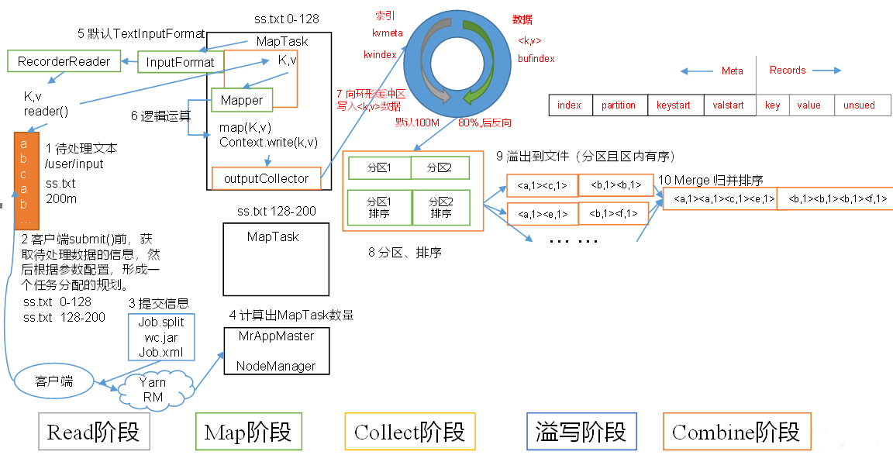
（1）Read阶段：MapTask通过用户编写的RecordReader，从输入InputSplit中解析出一个个key/value。
（2）Map阶段：该节点主要是将解析出的key/value交给用户编写map()函数处理，并产生一系列新的key/value。
（3）Collect收集阶段：在用户编写map()函数中，当数据处理完成后，一般会调用OutputCollector.collect()输出结果。在该函数内部，它会将生成的key/value分区（调用Partitioner），并写入一个环形内存缓冲区中。
（4）Spill阶段：即“溢写”，当环形缓冲区满后，MapReduce会将数据写到本地磁盘上，生成一个临时文件。需要注意的是，将数据写入本地磁盘之前，先要对数据进行一次本地排序，并在必要时对数据进行合并、压缩等操作。
溢写阶段详情：
步骤1：利用快速排序算法对缓存区内的数据进行排序，排序方式是，先按照分区编号Partition进行排序，然后按照key进行排序。这样，经过排序后，数据以分区为单位聚集在一起，且同一分区内所有数据按照key有序。
步骤2：按照分区编号由小到大依次将每个分区中的数据写入任务工作目录下的临时文件output/spillN.out（N表示当前溢写次数）中。如果用户设置了Combiner，则写入文件之前，对每个分区中的数据进行一次聚集操作。
步骤3：将分区数据的元信息写到内存索引数据结构SpillRecord中，其中每个分区的元信息包括在临时文件中的偏移量、压缩前数据大小和压缩后数据大小。如果当前内存索引大小超过1MB，则将内存索引写到文件output/spillN.out.index中。
（5）Combine阶段：当所有数据处理完成后，MapTask对所有临时文件进行一次合并，以确保最终只会生成一个数据文件。
当所有数据处理完后，MapTask会将所有临时文件合并成一个大文件，并保存到文件output/file.out中，同时生成相应的索引文件output/file.out.index。
在进行文件合并过程中，MapTask以分区为单位进行合并。对于某个分区，它将采用多轮递归合并的方式。每轮合并io.sort.factor（默认10）个文件，并将产生的文件重新加入待合并列表中，对文件排序后，重复以上过程，直到最终得到一个大文件。
让每个MapTask最终只生成一个数据文件，可避免同时打开大量文件和同时读取大量小文件产生的随机读取带来的开销。
ReduceTask工作机制
1．ReduceTask工作机制
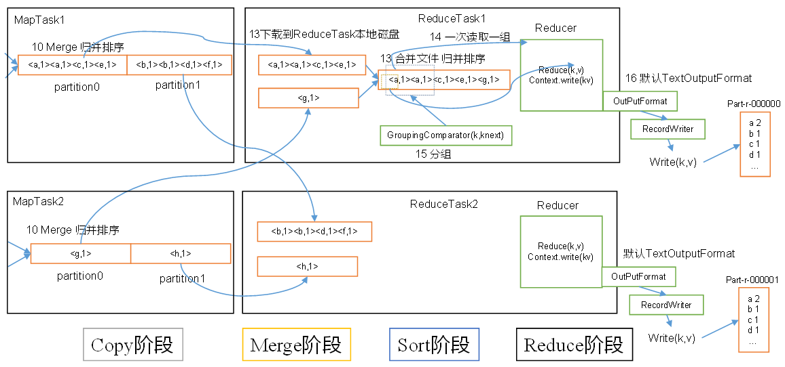
（1）Copy阶段：ReduceTask从各个MapTask上远程拷贝一片数据，并针对某一片数据，如果其大小超过一定阈值，则写到磁盘上，否则直接放到内存中。
（2）Merge阶段：在远程拷贝数据的同时，ReduceTask启动了两个后台线程对内存和磁盘上的文件进行合并，以防止内存使用过多或磁盘上文件过多。
（3）Sort阶段：按照MapReduce语义，用户编写reduce()函数输入数据是按key进行聚集的一组数据。为了将key相同的数据聚在一起，Hadoop采用了基于排序的策略。由于各个MapTask已经实现对自己的处理结果进行了局部排序，因此，ReduceTask只需对所有数据进行一次归并排序即可。
（4）Reduce阶段：reduce()函数将计算结果写到HDFS上。
2．设置ReduceTask并行度（个数）
ReduceTask的并行度同样影响整个Job的执行并发度和执行效率，但与MapTask的并发数由切片数决定不同，ReduceTask数量的决定是可以直接手动设置：
// 默认值是1，手动设置为4
job.setNumReduceTasks(4);3．实验：测试ReduceTask多少合适（据说是IBM工程师做的实验）
（1）实验环境：1个Master节点，16个Slave节点：CPU:8GHZ，内存: 2G
（2）实验结论：
改变ReduceTask （数据量为1GB）
| MapTask =16 | ||||||||||
|---|---|---|---|---|---|---|---|---|---|---|
| ReduceTask | 1 | 5 | 10 | 15 | 16 | 20 | 25 | 30 | 45 | 60 |
| 总时间 | 892 | 146 | 110 | 92 | 88 | 100 | 128 | 101 | 145 | 104 |
4．注意事项
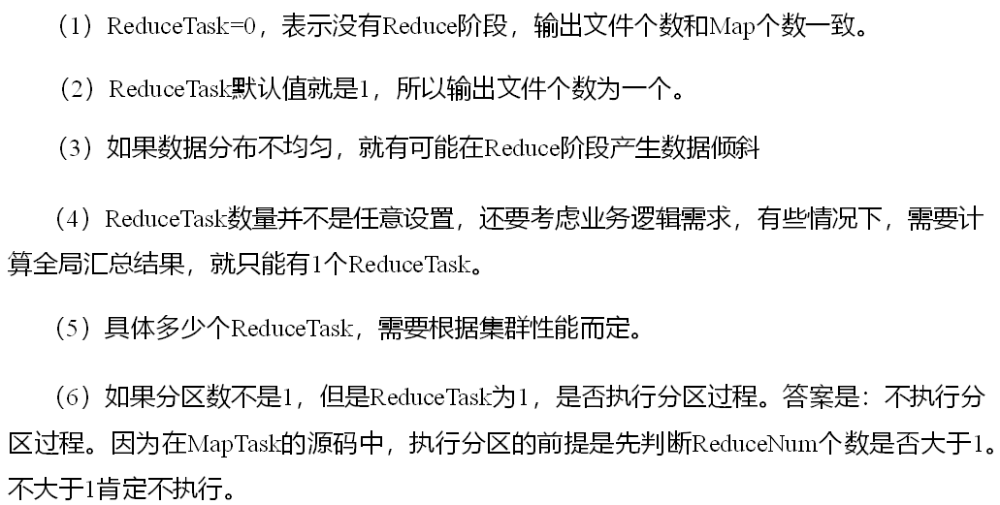
数据倾斜：如果有三个ReduceTask，若其中①里面有1亿条数据，②里面有100条数据，③里面有1条数据，那么这就负载不够均衡，①会压力特别大。这种情况就叫数据倾斜。
注：以上两节合起来便是之前讲过的MapReduce工作流程
OutputFormat数据输出
OutputFormat接口实现类
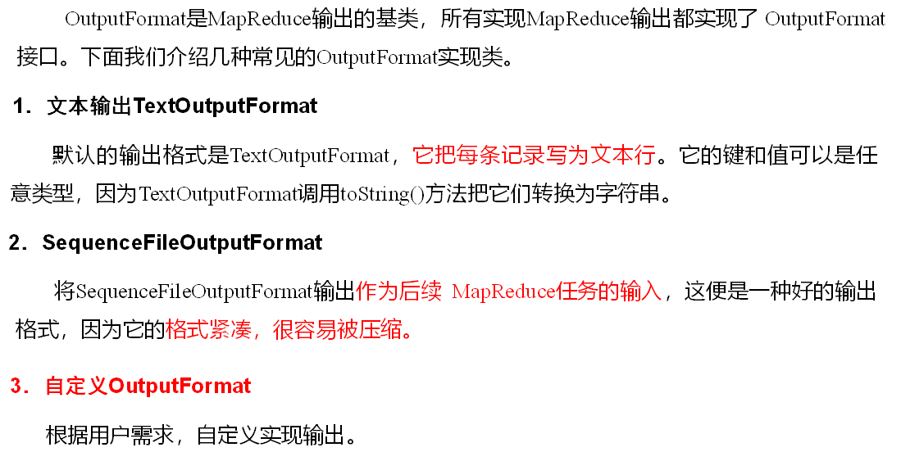
自定义OutputFormat
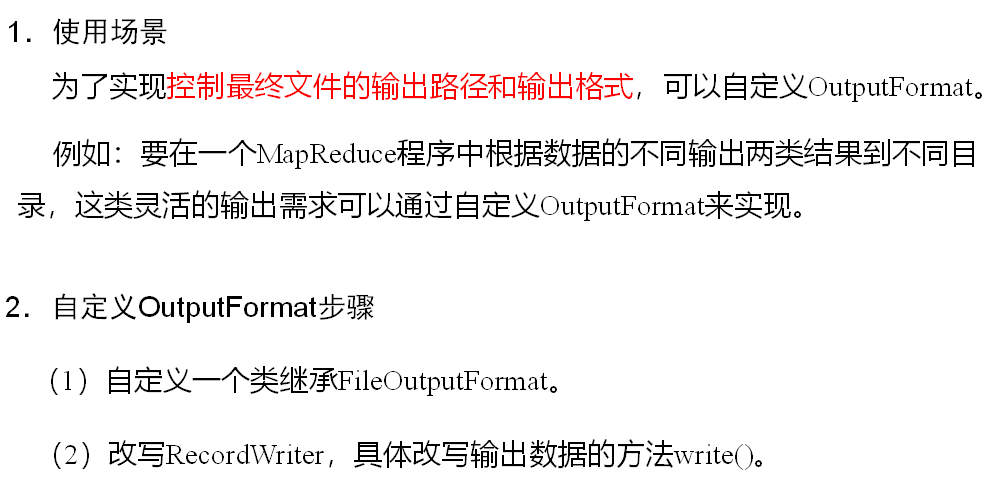
自定义OutputFormat案例实操
1．需求
过滤输入的log日志，包含百度的网站输出到/baidu.log，不包含百度的网站输出到/other.log。
（1）输入数据
http://www.baidu.com
http://www.google.com
http://cn.bing.com
http://www.github.com
http://www.sohu.com
http://www.sina.com
http://www.sin2a.com
http://www.sin2desa.com
http://www.sindsafa.com（2）期望输出数据
[/baidu.log]
http://www.baidu.com[/other.log]
http://www.google.com
http://cn.bing.com
http://www.github.com
http://www.sohu.com
http://www.sina.com
http://www.sin2a.com
http://www.sin2desa.com
http://www.sindsafa.com3．案例
（1）编写FilterMapper类
package com.swenchao.mr.outputFormt;
import org.apache.hadoop.io.IntWritable;
import org.apache.hadoop.io.LongWritable;
import org.apache.hadoop.io.NullWritable;
import org.apache.hadoop.io.Text;
import org.apache.hadoop.mapreduce.Mapper;
import java.io.IOException;
/**
* @Author: Swenchao
* @Date: 2020/9/12 下午 04:59
* @Func: Mapper类
*/
public class FilterMapper extends Mapper<LongWritable, Text, Text, NullWritable> {
@Override
protected void map(LongWritable key, Text value, Context context) throws IOException, InterruptedException {
context.write(value, NullWritable.get());
}
}
（2）编写FilterReducer类
package com.swenchao.mr.outputFormt;
import org.apache.hadoop.io.NullWritable;
import org.apache.hadoop.io.Text;
import org.apache.hadoop.mapreduce.Reducer;
import java.io.IOException;
/**
* @Author: Swenchao
* @Date: 2020/9/12 下午 04:59
* @Func: Reducer类
*/
public class FilterReducer extends Reducer<Text, NullWritable, Text, NullWritable> {
Text k = new Text();
@Override
protected void reduce(Text key, Iterable<NullWritable> values, Context context) throws IOException, InterruptedException {
String line = key.toString();
line += "\r\n";
k.set(line);
context.write(k, NullWritable.get());
}
}（3）自定义一个OutputFormat类
package com.swenchao.mr.outputFormt;
import org.apache.hadoop.io.NullWritable;
import org.apache.hadoop.io.Text;
import org.apache.hadoop.mapreduce.RecordWriter;
import org.apache.hadoop.mapreduce.TaskAttemptContext;
import org.apache.hadoop.mapreduce.lib.output.FileOutputFormat;
import java.io.IOException;
/**
* @Author: Swenchao
* @Date: 2020/9/12 下午 04:59
* @Func: 自定义OutputFormat
*/
public class FilterOutputFormat extends FileOutputFormat<Text, NullWritable> {
@Override
public RecordWriter<Text, NullWritable> getRecordWriter(TaskAttemptContext taskAttemptContext) throws IOException, InterruptedException {
return new FRecordWrite(taskAttemptContext);
}
}（4）编写FRecordWrite类
package com.swenchao.mr.outputFormt;
import org.apache.hadoop.fs.FSDataInputStream;
import org.apache.hadoop.fs.FSDataOutputStream;
import org.apache.hadoop.fs.FileSystem;
import org.apache.hadoop.fs.Path;
import org.apache.hadoop.io.IOUtils;
import org.apache.hadoop.io.NullWritable;
import org.apache.hadoop.io.Text;
import org.apache.hadoop.mapreduce.RecordWriter;
import org.apache.hadoop.mapreduce.TaskAttemptContext;
import java.io.IOException;
/**
* @Author: Swenchao
* @Date: 2020/9/12 下午 05:21
* @Func: 自定义 RecordWrite
*/
public class FRecordWrite extends RecordWriter<Text, NullWritable> {
FSDataOutputStream fosBaidu;
FSDataOutputStream fosOther;
public FRecordWrite(TaskAttemptContext taskAttemptContext) {
try {
// 获取文件系统
FileSystem fs = FileSystem.get(taskAttemptContext.getConfiguration());
// 创建输出到baidu.log输出流
fosBaidu = fs.create(new Path("baidu.log"));
// 创建输出到other.log输出流
fosOther = fs.create(new Path("other.log"));
} catch (IOException e) {
e.printStackTrace();
}
}
@Override
public void write(Text text, NullWritable nullWritable) throws IOException, InterruptedException {
// 判断key中是否有baidu，分别写入
if (text.toString().contains("baidu")){
fosBaidu.write(text.toString().getBytes());
} else {
fosOther.write(text.toString().getBytes());
}
}
@Override
public void close(TaskAttemptContext taskAttemptContext) throws IOException, InterruptedException {
// 结束关掉资源
IOUtils.closeStream(fosBaidu);
IOUtils.closeStream(fosOther);
}
}（5）编写FilterDriver类
package com.swenchao.mr.outputFormt;
import org.apache.hadoop.conf.Configuration;
import org.apache.hadoop.fs.Path;
import org.apache.hadoop.io.NullWritable;
import org.apache.hadoop.io.Text;
import org.apache.hadoop.mapreduce.Job;
import org.apache.hadoop.mapreduce.lib.input.FileInputFormat;
import org.apache.hadoop.mapreduce.lib.output.FileOutputFormat;
import java.io.IOException;
/**
* @Author: Swenchao
* @Date: 2020/9/12 下午 04:59
* @Func: 驱动类
*/
public class FilterDriver {
public static void main(String[] args) throws IOException, ClassNotFoundException, InterruptedException {
// 输入输出路径需要根据自己电脑上实际的输入输出路径设置
args = new String[] { "D:/scwri/Desktop/inputoutputformat", "D:/scwri/Desktop/output" };
Configuration conf = new Configuration();
Job job = Job.getInstance(conf);
job.setJarByClass(FilterDriver.class);
job.setMapperClass(FilterMapper.class);
job.setReducerClass(FilterReducer.class);
job.setMapOutputKeyClass(Text.class);
job.setMapOutputValueClass(NullWritable.class);
job.setOutputKeyClass(Text.class);
job.setOutputValueClass(NullWritable.class);
// 要将自定义的输出格式组件设置到job中
job.setOutputFormatClass(FilterOutputFormat.class);
FileInputFormat.setInputPaths(job, new Path(args[0]));
// 虽然我们自定义了outputformat，但是因为我们的outputformat继承自fileoutputformat
// 而fileoutputformat要输出一个_SUCCESS文件，所以，在这还得指定一个输出目录
FileOutputFormat.setOutputPath(job, new Path(args[1]));
boolean result = job.waitForCompletion(true);
System.exit(result ? 0 : 1);
}
}Join多种应用
Reduce Join
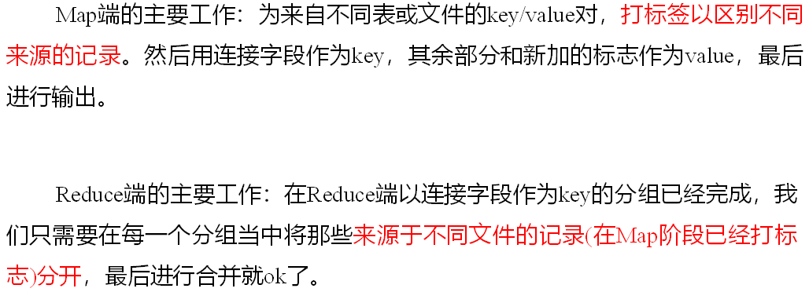
Reduce Join案例实操
- 需求
[订单数据表 order.txt]
| id | pid | amount |
|---|---|---|
| 1001 | 01 | 1 |
| 1002 | 02 | 2 |
| 1003 | 03 | 3 |
| 1004 | 04 | 4 |
| 1005 | 05 | 5 |
| 1006 | 06 | 6 |
[商品信息表 product.txt]
| pid | name |
|---|---|
| 01 | 小米 |
| 02 | 华为 |
| 03 | 格力 |
将商品信息表中数据根据商品pid合并到订单数据表中。
[最终数据形式]
| id | pname | amount |
|---|---|---|
| 1001 | 小米 | 1 |
| 1004 | 小米 | 4 |
| 1002 | 华为 | 2 |
| 1005 | 华为 | 5 |
| 1003 | 格力 | 3 |
| 1006 | 格力 | 6 |
- 需求分析
通过将关联条件作为Map输出的key，将两表满足Join条件的数据并携带数据所来源的文件信息，发往同一个ReduceTask，在Reduce中进行数据的串联，如图4-20所示。
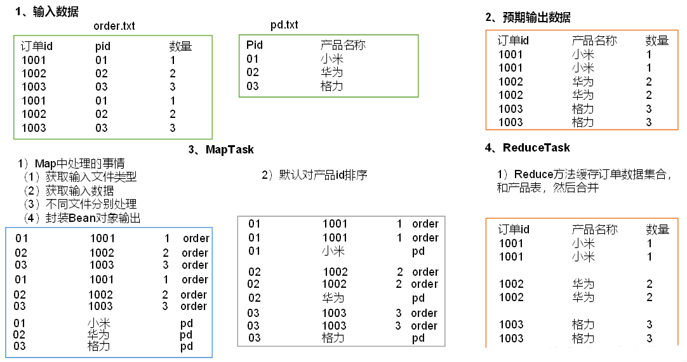
- 代码实现
1）创建商品和订合并后的Bean类
package com.swenchao.mr.joinTable;
import org.apache.hadoop.io.Writable;
import java.io.DataInput;
import java.io.DataOutput;
import java.io.IOException;
/**
* @Author: Swenchao
* @Date: 2020/9/14 下午 03:03
* @Func: 表的bean类
*/
public class TableBean implements Writable {
/**订单id*/
private String id;
/**产品id*/
private String pid;
/**数量*/
private int amount;
/**产品名称*/
private String pname;
/**标记（订单还是产品）*/
private String flag;
public TableBean() {
}
public TableBean(String id, String pid, int amount, String pname, String flag) {
this.id = id;
this.pid = pid;
this.amount = amount;
this.pname = pname;
this.flag = flag;
}
@Override
public void write(DataOutput dataOutput) throws IOException {
dataOutput.writeUTF(id);
dataOutput.writeUTF(pid);
dataOutput.writeInt(amount);
dataOutput.writeUTF(pname);
dataOutput.writeUTF(flag);
}
@Override
public void readFields(DataInput dataInput) throws IOException {
id = dataInput.readUTF();
pid = dataInput.readUTF();
amount = dataInput.readInt();
pname = dataInput.readUTF();
flag = dataInput.readUTF();
}
public String getId() {
return id;
}
public void setId(String id) {
this.id = id;
}
public String getPid() {
return pid;
}
public void setPid(String pid) {
this.pid = pid;
}
public int getAmount() {
return amount;
}
public void setAmount(int amount) {
this.amount = amount;
}
public String getPname() {
return pname;
}
public void setPname(String pname) {
this.pname = pname;
}
public String getFlag() {
return flag;
}
public void setFlag(String flag) {
this.flag = flag;
}
@Override
public String toString() {
return id + "\t" + amount + "\t" + pname;
}
}2）编写TableMapper类
package com.swenchao.mr.joinTable;
import org.apache.hadoop.io.LongWritable;
import org.apache.hadoop.io.Text;
import org.apache.hadoop.mapreduce.Mapper;
import org.apache.hadoop.mapreduce.lib.input.FileSplit;
import javax.swing.text.TabExpander;
import java.io.IOException;
/**
* @Author: Swenchao
* @Date: 2020/9/14 下午 03:55
* @Func: mapper类
*/
public class TableMapper extends Mapper<LongWritable, Text, Text, TableBean> {
String name;
TableBean bean = new TableBean();
Text k = new Text();
// /**因为在一开始要拿到它的文件信息来做区分，所以重写此方法*/
@Override
protected void setup(Context context) throws IOException, InterruptedException {
// 获取文件名称
FileSplit inputSplit = (FileSplit) context.getInputSplit();
name = inputSplit.getPath().getName();
}
@Override
protected void map(LongWritable key, Text value, Context context) throws IOException, InterruptedException {
String line = value.toString();
if (name.startsWith("order")) {
String[] detail = line.split("\t");
bean.setId(detail[0]);
bean.setPid(detail[1]);
bean.setAmount(Integer.parseInt(detail[2]));
bean.setFlag("order");
bean.setPname("");
k.set(detail[1]);
} else {
String[] detail = line.split("\t");
bean.setId("");
bean.setPid(detail[0]);
bean.setAmount(0);
bean.setFlag("pd");
bean.setPname(detail[1]);
k.set(detail[0]);
}
context.write(k, bean);
}
}3）编写TableReducer类
package com.swenchao.mr.joinTable;
import org.apache.commons.beanutils.BeanUtils;
import org.apache.hadoop.io.NullWritable;
import org.apache.hadoop.io.Text;
import org.apache.hadoop.mapreduce.Reducer;
import java.io.IOException;
import java.lang.reflect.InvocationTargetException;
import java.util.ArrayList;
/**
* @Author: Swenchao
* @Date: 2020/9/14 下午 03:55
* @Func: reducer类
*/
public class TableReducer extends Reducer<Text, TableBean, NullWritable, TableBean> {
@Override
protected void reduce(Text key, Iterable<TableBean> values, Context context) throws IOException, InterruptedException {
ArrayList<TableBean> orderBeans = new ArrayList<>();
/**标记是否获得pname*/
boolean isGetPname = false;
String pName = "";
for (TableBean bean :values) {
if ("order".equals(bean.getFlag())){
TableBean tableBean = new TableBean();
try {
BeanUtils.copyProperties(tableBean, bean);
orderBeans.add(tableBean);
} catch (IllegalAccessException e) {
e.printStackTrace();
} catch (InvocationTargetException e) {
e.printStackTrace();
}
} else if (!isGetPname) {
pName += bean.getPname();
isGetPname = true;
}
}
for (TableBean tableBean : orderBeans){
tableBean.setPname(pName);
context.write(NullWritable.get(), tableBean);
}
}
}4）编写TableDriver类
package com.swenchao.mr.joinTable;
import org.apache.hadoop.conf.Configuration;
import org.apache.hadoop.fs.Path;
import org.apache.hadoop.io.NullWritable;
import org.apache.hadoop.io.Text;
import org.apache.hadoop.mapreduce.Job;
import org.apache.hadoop.mapreduce.Mapper;
import org.apache.hadoop.mapreduce.lib.input.FileInputFormat;
import org.apache.hadoop.mapreduce.lib.output.FileOutputFormat;
import java.io.IOException;
/**
* @Author: Swenchao
* @Date: 2020/9/14 下午 03:55
* @Func: 驱动类
*/
public class TableDriver {
public static void main(String[] args) throws IOException, ClassNotFoundException, InterruptedException {
args = new String[]{"D:/scwri/Desktop/inputTable/", "D:/scwri/Desktop/output"};
// 1 获取配置信息，或者job对象实例
Configuration configuration = new Configuration();
Job job = Job.getInstance(configuration);
// 2 指定本程序的jar包所在的本地路径
job.setJarByClass(TableDriver.class);
// 3 指定本业务job要使用的Mapper/Reducer业务类
job.setMapperClass(TableMapper.class);
job.setReducerClass(TableReducer.class);
// 4 指定Mapper输出数据的kv类型
job.setMapOutputKeyClass(Text.class);
job.setMapOutputValueClass(TableBean.class);
// 5 指定最终输出的数据的kv类型
job.setOutputKeyClass(NullWritable.class);
job.setOutputValueClass(TableBean.class);
// 6 指定job的输入原始文件所在目录
FileInputFormat.setInputPaths(job, new Path(args[0]));
FileOutputFormat.setOutputPath(job, new Path(args[1]));
// 7 将job中配置的相关参数，以及job所用的java类所在的jar包， 提交给yarn去运行
boolean result = job.waitForCompletion(true);
System.exit(result ? 0 : 1);
}
}- 测试
运行程序查看结果
1004 4 小米
1001 1 小米
1005 5 华为
1002 2 华为
1006 6 格力
1003 3 格力- 总结
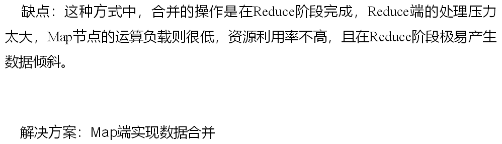
Map Join
- 使用场景
Map Join适用于一张表十分小、一张表很大的场景。
- 优点
思考：在Reduce端处理过多的表，非常容易产生数据倾斜。怎么办？
在Map端缓存多张表，提前处理业务逻辑，这样增加Map端业务，减少Reduce端数据的压力，尽可能的减少数据倾斜。
- 具体办法：采用DistributedCache
（1）在Mapper的setup阶段，将文件读取到缓存集合中。
（2）在驱动函数中加载缓存。
// 缓存普通文件到Task运行节点。
job.addCacheFile(new URI("file://d:/pd.txt"));Map Join案例
- 需求（同上）
将商品信息表中数据根据商品pid合并到订单数据表中。
- 需求分析
MapJoin适用于关联表中有小表的情形。
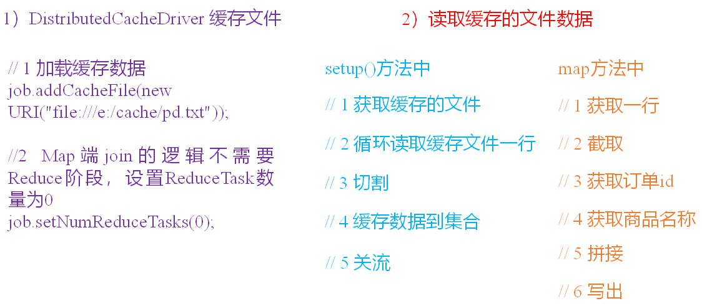
- 实现代码
（1）在驱动模块中添加缓存文件
package com.swenchao.mr.cache;
import org.apache.hadoop.conf.Configuration;
import org.apache.hadoop.fs.Path;
import org.apache.hadoop.io.NullWritable;
import org.apache.hadoop.io.Text;
import org.apache.hadoop.mapreduce.Job;
import org.apache.hadoop.mapreduce.lib.input.FileInputFormat;
import org.apache.hadoop.mapreduce.lib.output.FileOutputFormat;
import java.io.IOException;
import java.net.URI;
import java.net.URISyntaxException;
/**
* @Author: Swenchao
* @Date: 2020/9/15 上午 09:17
* @Func: 驱动
*/
public class DistributedCacheDriver {
public static void main(String[] args) throws IOException, ClassNotFoundException, InterruptedException, URISyntaxException {
// 0 根据自己电脑路径重新配置
// args = new String[]{"e:/input/inputtable2", "e:/output1"};
args = new String[]{"D:/scwri/Desktop/inputTable/", "D:/scwri/Desktop/output"};
// 1 获取job信息
Configuration configuration = new Configuration();
Job job = Job.getInstance(configuration);
// 2 设置加载jar包路径
job.setJarByClass(DistributedCacheDriver.class);
// 3 关联map
job.setMapperClass(DistributedCacheMapper.class);
// 4 设置最终输出数据类型
job.setOutputKeyClass(Text.class);
job.setOutputValueClass(NullWritable.class);
// 5 设置输入输出路径
FileInputFormat.setInputPaths(job, new Path(args[0]));
FileOutputFormat.setOutputPath(job, new Path(args[1]));
// 6 加载缓存数据
job.addCacheFile(new URI("file:///d:/scwri/Desktop/cache/pd.txt"));
// 7 Map端Join的逻辑不需要Reduce阶段，设置reduceTask数量为0
job.setNumReduceTasks(0);
// 8 提交
boolean result = job.waitForCompletion(true);
System.exit(result ? 0 : 1);
}
}（2）读取缓存的文件数据
package com.swenchao.mr.cache;
import com.swenchao.mr.joinTable.TableBean;
import org.apache.commons.lang.StringUtils;
import org.apache.hadoop.io.IOUtils;
import org.apache.hadoop.io.LongWritable;
import org.apache.hadoop.io.NullWritable;
import org.apache.hadoop.io.Text;
import org.apache.hadoop.mapreduce.Mapper;
import java.io.BufferedReader;
import java.io.FileInputStream;
import java.io.IOException;
import java.io.InputStreamReader;
import java.net.URI;
import java.util.HashMap;
import java.util.Map;
/**
* @Author: Swenchao
* @Date: 2020/9/15 上午 09:24
* @Func: 缓存mapper
*/
public class DistributedCacheMapper extends Mapper<LongWritable, Text, Text, NullWritable> {
Map<String, String> pdMap = new HashMap<>();
Text k = new Text();
@Override
protected void setup(Context context) throws IOException, InterruptedException {
// 缓存小表
URI[] cacheFiles = context.getCacheFiles();
String path = cacheFiles[0].getPath().toString();
BufferedReader reader = new BufferedReader(new InputStreamReader(new FileInputStream(path), "UTF-8"));
String line;
while (StringUtils.isNotEmpty(line = reader.readLine())){
// 获取数据不为空，进行切割
String[] detail = line.split("\t");
pdMap.put(detail[0], detail[1]);
}
IOUtils.closeStream(reader);
}
@Override
protected void map(LongWritable key, Text value, Context context) throws IOException, InterruptedException {
// 拿到一行进行切割
String line = value.toString();
String[] detail = line.split("\t");
// 从map里面获取pName
String pid = detail[1];
String pName = pdMap.get(pid);
// 封装
line = line + "\t" + pName;
k.set(line);
context.write(k, NullWritable.get());
}
}计数器应用
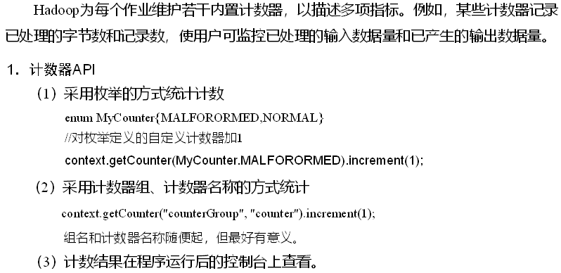
数据清洗（ETL）
在运行核心业务MapReduce程序之前，往往要先对数据进行清洗，清理掉不符合用户要求的数据。清理的过程往往只需要运行Mapper程序，不需要运行Reduce程序。
数据清洗案例-简单解析版
- 需求
去除日志中字段长度小于等于11的日志。
（1）输入数据 （非常多，但是跟下面类似）
194.237.142.21 - - [18/Sep/2013:06:49:18 +0000] "GET /wp-content/uploads/2013/07/rstudio-git3.png HTTP/1.1" 304 0 "-" "Mozilla/4.0 (compatible;)"
183.49.46.228 - - [18/Sep/2013:06:49:23 +0000] "-" 400 0 "-" "-"
163.177.71.12 - - [18/Sep/2013:06:49:33 +0000] "HEAD / HTTP/1.1" 200 20 "-" "DNSPod-Monitor/1.0"
163.177.71.12 - - [18/Sep/2013:06:49:36 +0000] "HEAD / HTTP/1.1" 200 20 "-" "DNSPod-Monitor/1.0"
101.226.68.137 - - [18/Sep/2013:06:49:42 +0000] "HEAD / HTTP/1.1" 200 20 "-" "DNSPod-Monitor/1.0"
101.226.68.137 - - [18/Sep/2013:06:49:45 +0000] "HEAD / HTTP/1.1" 200 20 "-" "DNSPod-Monitor/1.0"
60.208.6.156 - - [18/Sep/2013:06:49:48 +0000] "GET /wp-content/uploads/2013/07/rcassandra.png HTTP/1.0" 200 185524 "http://cos.name/category/software/packages/" "Mozilla/5.0 (Windows NT 6.1) AppleWebKit/537.36 (KHTML, like Gecko) Chrome/29.0.1547.66 Safari/537.36"
...（2）期望输出数据
每行字段长度都大于11。
- 需求分析
需要在Map阶段对输入的数据根据规则进行过滤清洗。
- 实现代码
（1）编写LogMapper类
package com.swenchao.mr.log;
import org.apache.hadoop.io.LongWritable;
import org.apache.hadoop.io.NullWritable;
import org.apache.hadoop.io.Text;
import org.apache.hadoop.mapreduce.Mapper;
import java.io.IOException;
/**
* @Author: Swenchao
* @Date: 2020/9/16 下午 04:23
* @Func: Mapper类
*/
public class logMapper extends Mapper<LongWritable, Text, Text, NullWritable> {
@Override
protected void map(LongWritable key, Text value, Context context) throws IOException, InterruptedException {
// 获取一行
String line = value.toString();
// 解析数据
boolean result = parseLog(line, context);
if (!result) {
return;
} else {
context.write(value, NullWritable.get());
}
}
private boolean parseLog(String line, Context context) {
String[] detail = line.split(" ");
if (detail.length > 11){
context.getCounter("map", "true").increment(1);
return true;
} else {
context.getCounter("map", "false").increment(1);
return false;
}
}
}（2）编写LogDriver类
package com.swenchao.mr.log;
import org.apache.hadoop.conf.Configuration;
import org.apache.hadoop.fs.Path;
import org.apache.hadoop.io.NullWritable;
import org.apache.hadoop.io.Text;
import org.apache.hadoop.mapreduce.Job;
import org.apache.hadoop.mapreduce.lib.input.FileInputFormat;
import org.apache.hadoop.mapreduce.lib.output.FileOutputFormat;
import java.io.IOException;
/**
* @Author: Swenchao
* @Date: 2020/9/16 下午 04:23
* @Func:
*/
public class logDriver {
public static void main(String[] args) throws IOException, ClassNotFoundException, InterruptedException {
// 输入输出路径需要根据自己电脑上实际的输入输出路径设置
args = new String[]{"D:/scwri/Desktop/inputWeb/", "D:/scwri/Desktop/output"};
// 1 获取job信息
Configuration conf = new Configuration();
Job job = Job.getInstance(conf);
// 2 加载jar包
job.setJarByClass(logDriver.class);
// 3 关联map
job.setMapperClass(logMapper.class);
// 4 设置最终输出类型
job.setOutputKeyClass(Text.class);
job.setOutputValueClass(NullWritable.class);
// 设置reducetask个数为0
job.setNumReduceTasks(0);
// 5 设置输入和输出路径
FileInputFormat.setInputPaths(job, new Path(args[0]));
FileOutputFormat.setOutputPath(job, new Path(args[1]));
// 6 提交
job.waitForCompletion(true);
}
}数据清洗案例实操-复杂解析版
1．需求
对Web访问日志中的各字段识别切分，去除日志中不合法的记录。根据清洗规则，输出过滤后的数据。
（1）输入数据
同上
（2）期望输出数据
都是合法的数据
2．实现代码
（1）定义一个bean，用来记录日志数据中的各数据字段（除了信息还有）
package com.swenchao.mr.log;
public class LogBean {
private String remote_addr;// 记录客户端的ip地址
private String remote_user;// 记录客户端用户名称,忽略属性"-"
private String time_local;// 记录访问时间与时区
private String request;// 记录请求的url与http协议
private String status;// 记录请求状态；成功是200
private String body_bytes_sent;// 记录发送给客户端文件主体内容大小
private String http_referer;// 用来记录从那个页面链接访问过来的
private String http_user_agent;// 记录客户浏览器的相关信息
private boolean valid = true;// 判断数据是否合法
public String getRemote_addr() {
return remote_addr;
}
public void setRemote_addr(String remote_addr) {
this.remote_addr = remote_addr;
}
public String getRemote_user() {
return remote_user;
}
public void setRemote_user(String remote_user) {
this.remote_user = remote_user;
}
public String getTime_local() {
return time_local;
}
public void setTime_local(String time_local) {
this.time_local = time_local;
}
public String getRequest() {
return request;
}
public void setRequest(String request) {
this.request = request;
}
public String getStatus() {
return status;
}
public void setStatus(String status) {
this.status = status;
}
public String getBody_bytes_sent() {
return body_bytes_sent;
}
public void setBody_bytes_sent(String body_bytes_sent) {
this.body_bytes_sent = body_bytes_sent;
}
public String getHttp_referer() {
return http_referer;
}
public void setHttp_referer(String http_referer) {
this.http_referer = http_referer;
}
public String getHttp_user_agent() {
return http_user_agent;
}
public void setHttp_user_agent(String http_user_agent) {
this.http_user_agent = http_user_agent;
}
public boolean isValid() {
return valid;
}
public void setValid(boolean valid) {
this.valid = valid;
}
@Override
public String toString() {
StringBuilder sb = new StringBuilder();
sb.append(this.valid);
// 使用特殊字段（"\001"）拼接，因为其他的可能原来字符串中就可能有
sb.append("\001").append(this.remote_addr);
sb.append("\001").append(this.remote_user);
sb.append("\001").append(this.time_local);
sb.append("\001").append(this.request);
sb.append("\001").append(this.status);
sb.append("\001").append(this.body_bytes_sent);
sb.append("\001").append(this.http_referer);
sb.append("\001").append(this.http_user_agent);
return sb.toString();
}
}（2）编写LogMapper类
package com.atguigu.mapreduce.log;
import java.io.IOException;
import org.apache.hadoop.io.LongWritable;
import org.apache.hadoop.io.NullWritable;
import org.apache.hadoop.io.Text;
import org.apache.hadoop.mapreduce.Mapper;
public class LogMapper extends Mapper<LongWritable, Text, Text, NullWritable>{
Text k = new Text();
@Override
protected void map(LongWritable key, Text value, Context context) throws IOException, InterruptedException {
// 1 获取1行
String line = value.toString();
// 2 解析日志是否合法
LogBean bean = parseLog(line);
if (!bean.isValid()) {
return;
}
k.set(bean.toString());
// 3 输出
context.write(k, NullWritable.get());
}
// 解析日志
private LogBean parseLog(String line) {
LogBean logBean = new LogBean();
// 1 截取
String[] fields = line.split(" ");
if (fields.length > 11) {
// 2封装数据
logBean.setRemote_addr(fields[0]);
logBean.setRemote_user(fields[1]);
logBean.setTime_local(fields[3].substring(1));
logBean.setRequest(fields[6]);
logBean.setStatus(fields[8]);
logBean.setBody_bytes_sent(fields[9]);
logBean.setHttp_referer(fields[10]);
if (fields.length > 12) {
logBean.setHttp_user_agent(fields[11] + " "+ fields[12]);
}else {
logBean.setHttp_user_agent(fields[11]);
}
// 大于400，HTTP错误
if (Integer.parseInt(logBean.getStatus()) >= 400) {
logBean.setValid(false);
}
}else {
logBean.setValid(false);
}
return logBean;
}
}（3）编写LogDriver类
package com.swenchao.mr.log;
import org.apache.hadoop.conf.Configuration;
import org.apache.hadoop.fs.Path;
import org.apache.hadoop.io.NullWritable;
import org.apache.hadoop.io.Text;
import org.apache.hadoop.mapreduce.Job;
import org.apache.hadoop.mapreduce.lib.input.FileInputFormat;
import org.apache.hadoop.mapreduce.lib.output.FileOutputFormat;
public class LogDriver {
public static void main(String[] args) throws Exception {
// 1 获取job信息
Configuration conf = new Configuration();
Job job = Job.getInstance(conf);
// 2 加载jar包
job.setJarByClass(LogDriver.class);
// 3 关联map
job.setMapperClass(LogMapper.class);
// 4 设置最终输出类型
job.setOutputKeyClass(Text.class);
job.setOutputValueClass(NullWritable.class);
// 5 设置输入和输出路径
FileInputFormat.setInputPaths(job, new Path(args[0]));
FileOutputFormat.setOutputPath(job, new Path(args[1]));
// 6 提交
job.waitForCompletion(true);
}
}MapReduce开发总结
在编写MapReduce程序时，需要考虑如下几个方面：
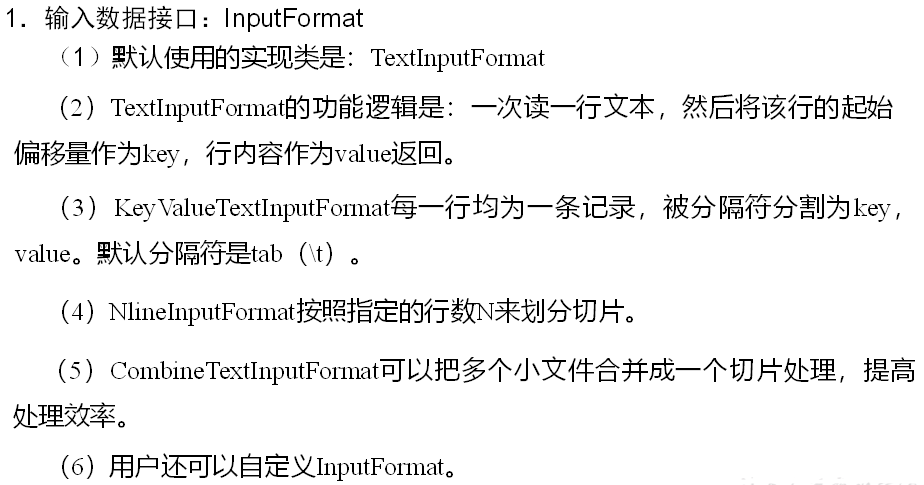
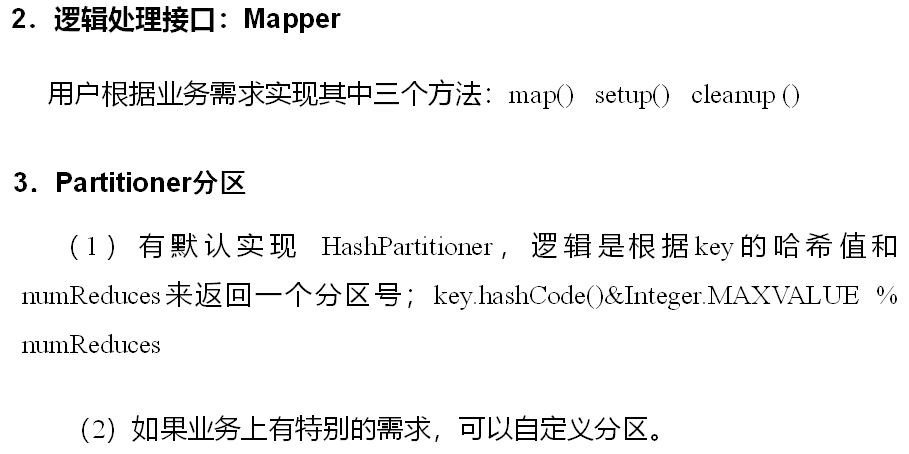
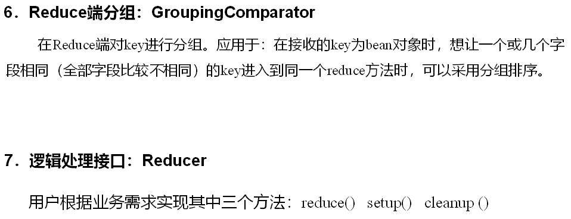
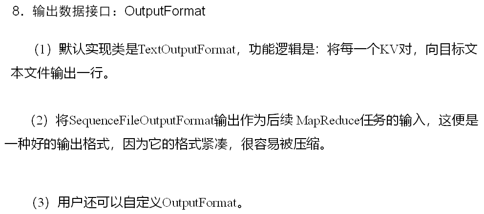
待续…
MapReduce的工作原理终于弄完了，这是比较重要一章吧，感觉面试基本都会问（不过现在好像mr用的不是那么多了，Spark好像挺多的）。
接下来是Hadoop数据压缩
屁屁好像要进入每年中的加班时间段了，希望她不会太累
希望自己能尽快找到一个更好的自己喜欢的sx，不断进步~